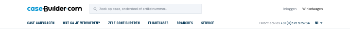
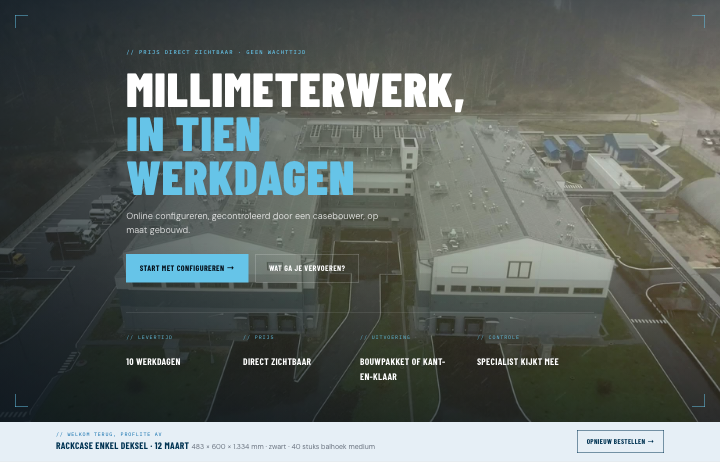
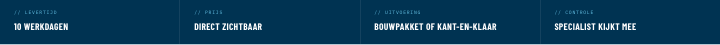
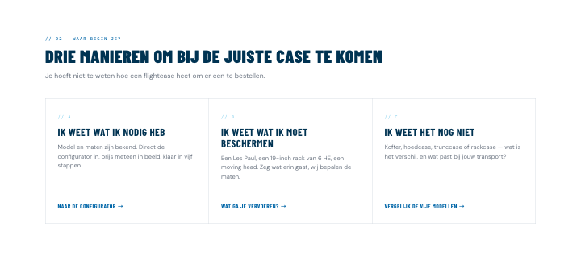
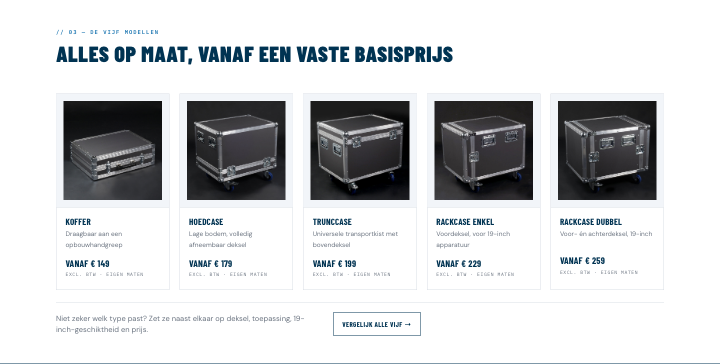
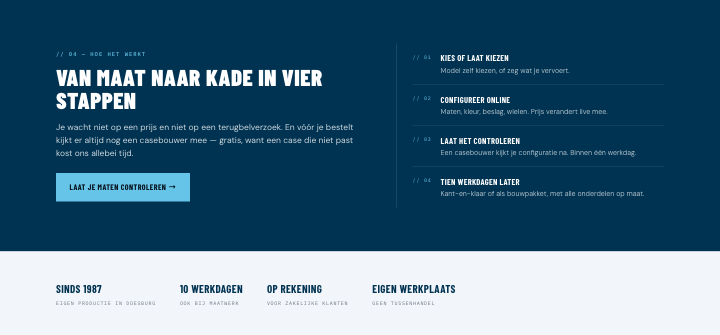
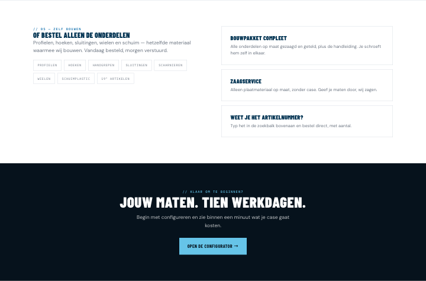
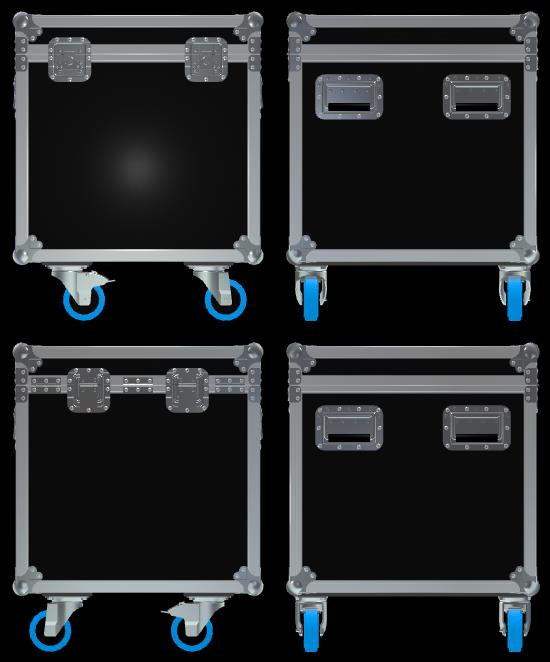

Waarom de site zo in elkaar zit: per onderdeel het doel, de keuze erachter, en wat erop moet staan.
Uitgangspunt
Drie routes, en wij bepalen per product welke.Shop (niveau 1): een vaste case voor één apparaat, alleen kleur en logo, direct afrekenen — plus de onderdelen. Configurator (niveau 2 en 3): hoeken en maten, en wie meer wil gaat door naar alles. Aanvraag: geen ontwerp, een casebouwer tekent op een schets of datasheet.
De klant hoeft het woord "niveau" nooit te zien: het apparaat dat hij invult bepaalt de route. Een vaste case kan niet opgeschaald worden naar andere maten; de configurator wel, van 2 naar 3.
De homepage spreekt in de eerste plaats de professionele klant aan. De kleine koper moet zich er welkom voelen, maar hij draagt de pagina niet.
Per onderdeel
Ontwerpkeuzes
01
Navigatiebalk
Doel
elke bezoeker in één klik op de juiste route.
Waarom
drie soorten bezoekers: wie weet wat hij nodig heeft, wie weet wat erin moet, en wie het nog niet weet. Zelf configureren is geen tabblad meer maar hoort bij Flightcases — als eigen tab concurreerde het met zijn eigen product.
Bevat
Case aanvragen · Wat ga je vervoeren? · Flightcases (menu met toepassingen, modellen en zelf configureren) · Branches · Service · Shop, achteraan. Zoekveld altijd zichtbaar voor artikelnummers, telefoonnummer rechts.
02
Hero (homepage)
Doel
in één scherm zeggen wat we doen, en de grote klant aanspreken zonder de kleine af te schrikken.
Waarom
een belofte in plaats van een getal — "de snelste van Nederland" in plaats van "tien werkdagen", want de levertijd wordt straks per configuratie berekend.
Bevat
kop · Case aanvragen als hoofdknop · Wat ga je vervoeren? als veld dat openklapt, met "Ik weet het nog niet" eronder · specband met levertijd, prijs, uitvoering en controle. Knoppen boven de vouw.
03
Onder de hero
Doel
de drie routes zichtbaar maken.
Waarom
de professional draagt de pagina, de consument vindt hier zijn deur.
Bevat
ik weet wat ik vervoer → wij kiezen de route · ik weet mijn maten → configurator · ik heb een tekening of een serie → aanvraag.
04
Flightcases
Doel
van "welk model?" naar een modelpagina.
Waarom
bezoekers kiezen op wat ze vervoeren, niet op hoe het heet.
Bevat
"De vorm kies je, de maten geef je" · draaiende 3D-kist die van maat verandert en het model kiest · knop die meeloopt naar dat model · strook "in het veld" · modellen met vanafprijs · vergelijkingstabel.
05
Modelpagina
Doel
vertrouwen geven vóór de configurator.
Bevat
vanafprijs · foto van een afgebouwde case · verwachtingen (maten, levertijd, kleur, controle) · configurator die start bij stap 2.
06
Wat ga je vervoeren?
Doel
wie zijn apparaat kent maar niet de case, toch laten bestellen — en hier bepaalt het apparaat de route.
Bevat
zoekveld als hoofdactie · index van toepassingen · drie uitwegen: vaste case bekend → shop · maten bekend → configurator · staat er niet bij → aanvraag.
07
Shop (niveau 1)
Doel
kant-en-klare cases en onderdelen direct verkopen.
Waarom
een vaste case voor één apparaat — kleur en logo kiezen, verder niets. Een Medusa-product, geen configurator, en niet op te schalen naar andere maten. Er zijn er nu bijna nul; dit assortiment moet nog worden opgebouwd. Shop wijst voorlopig naar Wat ga je vervoeren.
niveau 2 zet hoeken en afmetingen open; wie meer wil gaat door naar niveau 3, waar alles aanpasbaar is, ook handgrepen en beslag.
Bevat
prijs die meeloopt · stap omhoog van 2 naar 3 · een casebouwer die meekijkt vóór er gezaagd wordt.
09
Branches
Doel
laten zien dat we deze markt kennen.
Waarom
zoekverkeer zit op apparatuur; sectoren alleen op eigen pagina's.
Bevat
per branche: eisen die vooraf vastliggen · toepassingen · bewijs in plaats van klantverhalen · afsluiting met naam en gezicht.
10
Grote spelers
Doel
inkopers aanspreken op de manier waarop ze inkopen.
Bevat
aanbesteding, OEM en series, verhuur, omroep, netbeheer · referenties (daar is toestemming voor nodig, geen tekst).
11
Case aanvragen
Doel
van schets naar tekening met prijs, dezelfde werkdag.
Waarom
zeventig procent van de orders begint hier, dus deze route krijgt overal de hoofdknop.
Bevat
formulier boven de vouw · schets, datasheet of foto · aantal · wanneer · budget (optioneel, scheelt een ronde) · e-mail.
CaseBuilder
Definitiefase
De architectuur waarop het ontwerp rust: waar de grens ligt tussen wat wij bouwen en wat van CaseBuilder blijft, welke lagen daarbinnen bestaan, en welke keuzes nog openstaan.
Lees dit als het plan van juli, niet als de stand van nu
Plan en werkelijkheid lopen uiteen. Deze fase beschrijft het advies uit het architectuurvoorstel. Wat er sinds augustus daadwerkelijk staat, wijkt daarvan af — en dat is bewust:
Medusa draait self-hosted in Docker op een VPS in Neurenberg, niet in Medusa Cloud. Managed hosting is nog een open keuze. De eigen Casebuilder API-middleware uit opdracht 1595 hoort wél bij de MVP en wordt gebouwd; de prijs van een configuratie halen we server-side op bij de read-API van CaseBuilder. Er zijn geen koppelingen met Ridder of cb_core_v2.
De betaalprovider is Stripe (besloten op 28 september). Tot de koppeling er is, loopt afrekenen op de handmatige provider van Medusa en wordt er dus niets afgeschreven. Een PIM is niet gekozen; dat hangt aan de vraag of Bol, Amazon en eBay een echt doel zijn. Orders gaan nu nog met de hand naar productie: een medewerker van CaseBuilder neemt het configuratie-id over uit onze Medusa-admin. Straks haalt het ERP van CaseBuilder de orders zelf op, zoals nu bij Magento. Zie Koppelingen.
Eén principe maakt alles overzichtelijk: wij bouwen alles tot aan de casebuilder api. Alles daarachter — productie, CRM (Ridder), voorraad en verzending — blijft van CaseBuilder en verandert niet.
De casebuilder api is het luik in de muur, en werkt twee kanten op. Erin: bestellingen gaan door naar de productie. Eruit: order- en klantgegevens komen terug voor het klantportaal — inclusief telefonische orders die CaseBuilder zelf aanmaakt.
Gevolg: Magento is geen fundament maar een vervangbare schil. De productieketen hangt aan de casebuilder api, niet aan de webshop.
Uit het infrastructuurbord
De keten, van klik tot doos
Vijf schakels. De eerste is van ons, de rest niet. De grens loopt precies door de casebuilder api.
Wij bouwen
Sales set-up
Website en content
Webshop: catalogus, wagen, checkout
Configurator (extern, embedded)
Klantportaal
Van CaseBuilder
Sales ↔ productie
cb_core_v2 — orderregels en klantinfo
Ridder DB · profile 0 DB · pf_core
Migration services api
Shop floor service
Van CaseBuilder
Productie
Werkvoorbereiding
Order vrijgeven
Productieproces
CRM Ridder
Van CaseBuilder
Pick & pack
Client-app
Verzending
Scenario 1 — de basis
Vier lagen, niet in één tool proppen
Ze voelen als hetzelfde soort werk, maar het zijn verschillende systemen. Dat scherp houden voorkomt dat je iets bouwt dat alles half doet.
Sanity
Content-CMS
Pagina's, blog, teksten, landingspagina's — met een blokkenbibliotheek zodat een medewerker zelf pagina's samenstelt uit on-brand bouwblokken. Geen producten.
Medusa Cloud
Webshop
Catalogus, winkelwagen, checkout, betalen, klantaccounts. Hier beheert een medewerker de producten — niet in het CMS. Harde voorwaarde: managed, niet self-hosted.
casebuilder api
Klantportaal
Een paar schermen ín de frontend. Fase 1 toont alleen wat online is besteld. De bidirectionele stroom met de CRM — telefonische en mailorders erbij — komt later, niet nu.
alleen scenario 2
PIM
Verdeelstation voor productinformatie. Feeds binnen, verrijken, en productdata plus per-kanaal prijzen naar Bol, Amazon en eBay. Een latere uitbreiding, geen verbouwing.
De meetlat
Uitgangspunten
In volgorde van belang. Elke keuze hierboven en hieronder moet hierop terug te voeren zijn — dat is wat een keuze onderbouwd maakt in plaats van een voorkeur.
1
Veiligheid & compliance
Enterprise-klant; budget is niet de beperkende factor. PCI, GDPR en EU-dataresidentie wegen zwaarder dan kostenoptimalisatie.
2
Gebruiksgemak
Een niet-technische medewerker moet het dagelijkse werk zelf kunnen: pagina's, blogs, medewerkers, producten.
3
Onderhoudbaarheid
De stack moet prettig te ontwikkelen en te onderhouden zijn.
4
Kosten
Relevant, maar ondergeschikt aan de drie hierboven.
Afhankelijkheid van één persoon minimaliseren
Bewezen, bestaande oplossingen boven maatwerk, en een mainstream stack die elke developer kan overnemen. Dit principe verklaart bijna elke afwijzing verderop.
Frontend-vrijheid behouden
In een headless opzet staat de frontend los van de backend. Volledige ontwerp- en featurevrijheid, ongeacht welke CMS- of webshopkeuze eronder ligt.
Van klik tot productie
De datastroom
1Bezoeker opent een pagina → de frontend haalt content uit Sanity en producten uit Medusa.
2Toevoegen aan winkelwagen — een catalogusartikel óf een geconfigureerde flightcase → regel in de Medusa-cart, met de volledige configuratie als metadata.
3Afrekenen → Medusa maakt een betaalsessie → klant betaalt via iDEAL → order geplaatst.
4De order gaat via de casebuilder api door naar de productie.
5Het klantportaal haalt de bestellingen weer op uit de casebuilder api.
Stap 3 en 4 zijn nog niet dichtgetimmerd
Het architectuurvoorstel noteert het zelf: "via de casebuilder api doorgezet is iets te simpel gezegd misschien." Heeft de casebuilder api een endpoint dat betaling geslaagd of mislukt afhandelt? Zit dat nu in Magento, dan moeten wij het in onze backend bouwen en doorzetten. Dat is nieuwbouw, geen koppeling.
Uit het keuzedocument
Vier keuzes
De vier staan los van elkaar. Keuze 3 is een businesskeuze en gaat vóór de rest — die bepaalt namelijk welk CMS past.
Keuze
Opties
Stand
1 Commerce-backend
Magento headless Medusa Cloud Shopify Plus
Medusa — 95% zeker. Magento blijft niet. Harde voorwaarde: Cloud, niet self-hosted, anders komt de infra- en securitylast terug op ons.
2 Content-CMS
Sanity Storyblok Contentful
Sanity. Schema staat in code en dus in versiebeheer — past bij een code-first opzet. Let op de SSO-klif: SAML is een dure add-on.
Niveau 2. De redactie stelt pagina's samen uit on-brand blokken. Kan niets lelijks maken, en heeft de developer niet nodig voor een nieuwe pagina.
4 Verkoopkanalen
alleen eigen webshop + marktplaatsen via PIM
Open. Zijn Bol, Amazon en eBay een echt doel, dan gaat de PIM mee én moet Shopify serieus worden afgewogen — marktplaatskoppelingen zijn daar kant-en-klaar.
Betaling staat los
iDEAL is verplicht voor NL — ruim 60% van de klanten. De provider plugt in de commerce-backend en is dus verwisselbaar. Mollie voor lokaal en eenvoud (geen maandkosten, ~€0,30 per iDEAL-transactie), Stripe voor de sterkste API en Stripe Tax, dat de EU-btw uit handen neemt. Gekozen op 28 september: Stripe.
EU-btw is een aandachtspunt bij Medusa
NL plus DE, OSS, B2B reverse-charge en VIES draag je op Medusa meer zelf dan op Shopify. Mitigeren met Stripe Tax of een aparte tax-service — maar het moet wel belegd worden.
Overwogen en niet gekozen
Wat is afgevallen
Bewaard omdat de afweging waardevoller is dan de uitkomst — als een aanname verschuift, weet je welke optie terugkomt.
Optie
Waarom niet
Wanneer wel
Custom CMS / custom checkout
Overdracht lastig, alles leunt op één persoon, en het bestaat al. Bij checkout komt echt geld plus aansprakelijkheid: PCI, btw, fraude.
Nooit — die last koop je in
WordPress headless
Houdt de PHP- en pluginonderhoudslast, en is twee systemen zelf beheren.
Bij behoud van een bestaande investering — geldt hier niet
Magento behouden
Zwaar en prijzig om te draaien en te beveiligen, niet code-first, erft technische schuld en oude maatwerkmodules.
Was valide tot de audit — nu vervallen
Shopify Plus
Per-verkoop cut en lock-in; zelfgeprijsde configuratie-items vragen Draft Orders of Functions.
Als multi-channel een echt kerndoel wordt
Self-hosted commerce
Zet de ops- en securitylast terug op ons — botst met uitgangspunt 1.
Nooit binnen deze uitgangspunten
commercetools / composable
Zescijferige trajecten.
Bij een veelvoud van deze omvang
Risico's
Waar het mis kan gaan
De verborgen 80%
De zichtbare checkout is de makkelijke 20%. De rest zit in de back-officekoppelingen, en die bepalen hoe zwaar overnemen wordt. Audit eerst — er ligt een aparte checklist.
De productlijst bepaalt de dikte van de webshop
Waar de catalogus vandaan komt — casebuilder api, Magento of Panelcom — bepaalt hoe dun de webshoplaag kan zijn. Wordt het een handmatige Excel-upload, dan is de vervolgvraag hoe prijs en voorraad actueel blijven.
Medusa Cloud is jong
Mist het lange enterprise-trackrecord van de grootste spelers. Een reële overweging tegen uitgangspunt 1, en de reden dat Shopify in beeld blijft.
Security-musts
Prijzen altijd server-side bepalen of verifiëren. Hosted checkout. DPA tekenen met elke leverancier. EU-dataregio aanzetten. Tracking via Tag Manager, nooit in code of CMS.
Snelle referentie
De stack
Laag
Keuze
Toelichting
Frontend
Next.js + Tailwind
Deploy op Vercel, met CI/CD en previews
Content
Sanity
Headless CMS, EU-dataregio, blokkenbibliotheek
Webshop
Medusa
Zelf gehost op een eigen server, niet in Medusa Cloud. Magento vervallen; Shopify alleen terug bij multi-channel
Betalen
Stripe
Besloten op 28 september. iDEAL verplicht
Tracking
Google Tag Manager
Niet in code, niet in het CMS
Configurator
extern, embedded
iframe met postMessage; voedt de winkelwagen
PIM
alleen scenario 2
Nog te beslissen — hangt op knop 4
Grens
casebuilder api
Alles daarachter blijft van CaseBuilder
Nog niet vastgelegd
Vijf pakketten
Stand eind augustus: Magento blijft niet en Medusa is voor 95% zeker. Daarmee valt pakket A af en is B de facto gekozen. De andere drie staan er voor de volledigheid — en omdat C, D en E nog echte keuzes bevatten over editor-vrijheid en multi-channel.
Pakket
Commerce
Content
Risico
Kies als
A Behoud vervallen
Magento headless
Sanity · blokken
Laag op proces, midden op ops
Magento blijft niet — besloten
B Schone lei gekozen
Medusa Cloud
Sanity · blokken
Midden/hoog
Code-first, cut-vrij, Magento is oud
C Autonomie
Medusa of Magento
Storyblok · vrij
Midden
Redactie moet alles visueel kunnen
D Controle
Medusa of Magento
Sanity · vaste velden
Laag visueel, hoge dev-afhankelijkheid
Merkconsistentie boven zelfstandigheid
E Ontzorging
Shopify Plus
Sanity of Storyblok
Laag en bewezen
Multi-channel is een echt kerndoel
De configurator blijft zoals hij is
Extern en embedded, een iframe-shell met postMessage. Het enige integratiepunt is de bestel-knop die het geconfigureerde item in de winkelwagen legt. Nu via Magento's add-to-cart API, straks tegen Medusa als custom line item met de volledige configuratie als metadata. De zaagservice werkt met hetzelfde patroon — een service-line-item met de zaagmaten als metadata.
Vertrouw nooit een prijs uit de browser
Óf de configurator tekent de payload server-to-server, óf de geprijsde configuratie wordt server-side opgehaald via een config-ID. Anders is de prijs manipuleerbaar. Dit geldt in elk van de vijf pakketten.
Voor Gert
Openstaande vragen uit de architectuurdocumenten
01Levert de casebuilder api de productlijst?En de losse-onderdelen-catalogus — via de casebuilder api, of via Panelcom? Bij een mandje met schroeven én cases: lopen die beide door hetzelfde luik?bepaalt hoe dun de webshop-laag kan zijn, en of Magento nog nodig is
02Geeft de casebuilder api orderstatus en klantgegevens terug?Inclusief telefonische orders die CaseBuilder zelf aanmaakt.zonder dit bestaat het klantportaal niet
03Is er een feed-API voor Panelcom, of alleen een statische download?En komt die rechtstreeks bij ons binnen, of blijft die via CaseBuilder lopen?handwerk versus automatisch en altijd actueel
04Zijn Bol, Amazon en eBay een concreet doel, of "ooit misschien"?Bepaalt of de PIM nu een kernlaag is of fase 2 — én of Shopify serieus tegen Medusa afgewogen moet worden.scenario 1 of scenario 2
05Wat komt er uit de audit?Welke back-office-koppelingen en welke custom Magento-logica moeten mee? De zichtbare checkout is de makkelijke 20%; de verborgen 80% zit in de koppelingen.de scharnierfactor voor de pakketkeuze
06Medusa managed in de cloud, of zelf gehost?Het keuzedocument noemt Cloud, niet self-hosted een harde voorwaarde, omdat de infra- en securitylast anders bij ons terugkomt. Wat er nu draait is een VPS. Zelf hosten kán — ook op een server van CaseBuilder — maar dan moet iemand eigenaar zijn van updates, back-ups, monitoring en beveiliging, en moet vastliggen wie er 's nachts wordt gebeld. Waarom nu: het bepaalt de CI/CD-inrichting die in september staat gepland, het raakt de hostingkosten in de begroting, en na de contentimport is verhuizen een stuk duurder dan ervoor.raakt de bouwfase, niet de livegang
Van onze kant
Wat het bord oproept
Gelezen van het infrastructuurbord, naast de twee documenten. Deze staan nergens genoteerd.
06Adyen of Stripe — of allebei?Het bord noemt adyen — magento success order status én stripe — custom db webhook maken voor successful payment. De architectuurdocumenten adviseren Mollie of Stripe. Wat draait er vandaag echt?beantwoord 28 sep: de nieuwe webshop krijgt Stripe; Adyen hoort bij de huidige Magento-shop
07Is de casebuilder api hetzelfde als de REST API van cb_core_v2?Het bord tekent ze als twee blokken: een groene casebuilder api naast cb_core_v2, dat volgens de notitie een eigen schema en REST API heeft. Eén ding met twee namen, of twee lagen?bepaalt waar precies het luik zit
08Het klantportaal pollt nu.Het bord toont een watchdog die klantorders uit de database pollt en offline orders terugduwt. Het architectuurvoorstel gaat uit van een directe read op de casebuilder api. Blijft die watchdog bestaan, of vervalt hij?verschil tussen verhuizen en herbouwen
09Wanneer wordt de flash ID bijgewerkt?Bij het openen van de configurator ontstaat een flash ID in cb_core_v2. Gebeurt de update bij elke ontwerpwijziging, of alleen bij toevoegen aan de winkelwagen?bepaalt of een gedeelde configuratie-URL zonder login kan bestaan
10Wie is Trim, en wat is rack247?Het bord toont in GitLab een privérepo website casebuilder (trim) en een open repo rack247 (trim). Een tweede webshop of merk dat ook door deze rebuild geraakt wordt?niet genoemd in enig document
11Wat betekent de getekende overlap?Tussen de migration services api en de shop floor service staat expliciet overlap. Als daar functionaliteit dubbel ligt, raakt dat de belofte dat alles achter het luik ongemoeid blijft.risico voor de scheidslijn
12Staan Sentry en Datadog al aan?Het bord noteert ze met "Check Roks" ernaast — dat leest als voornemen, niet als bestaande situatie.zonder foutmonitoring bouw je blind
CaseBuilder
Bouwfase
Stand van zaken per 12 september 2026: de planning uit Figma, naast wat er werkelijk in de code staat. Groen is af; de rest staat gepland of loopt.
Chronologisch, met de stand per 28 september. Vier zijn afgerond, vijf lopen, één is deels gedaan — de rest wacht op CaseBuilder — en drie staan gepland.
1
Tool set-up klaar
Vercel-project, Sanity-basisinrichting en de bevestigde stack: Medusa, Sanity, Next.js.
afgerond
2a
Minimale frontend om een geconfigureerd product te bestellen
Gebouwd: productpagina, winkelwagen, afrekenen en de orderpagina staan in de klantrepo (PR #12 en #16). De configurator-embed loopt via postMessage — hij stuurt een configuratie-id, wij halen de prijs server-side op bij de read-API van CaseBuilder. Geen POST-integratie dus.
afgerond
2b
We zien de order terug in het webshopportaal
De order komt binnen in Medusa en is daar zichtbaar in de admin, voorlopig als onbetaald. Wat nog ontbreekt is de doorgifte naar het portaal van CaseBuilder: het Magento-orderendpoint en de watchdog-koppeling met cb_core_v2 — beide van CaseBuilder.
deels · rest wacht op cb
3
Stresstest — afgerond
Medusa blijft binnen alle grenzen; het knelpunt zit in de frontend, die álle producten ophaalt en in het geheugen filtert. De oorzaak is bekend en de drie ingrepen staan vast — dat is bouwwerk, geen onderzoek meer.
afgerond
4
Sitemap, wireframes en user flows uitgestippeld
Negentien sjablonen, twintig besteltaken en de volledige nieuwe boom liggen er; alle sjablonen zijn getekend.
afgerond
4
Productcategorieën webshop bepaald
Uit het concurrentenonderzoek ligt er een eerste indeling: welk cluster een shopcategorie wordt, welk een filter en welk een optie. Nog vast te leggen met CaseBuilder. Zie Van onderzoek naar site.
loopt
4
L1-producten geselecteerd
Welke cases als kant-en-klaar product in de shop komen: vaste maat, alleen kleur en logo. De zeven uit de offerte van Joran zijn de eerste kandidaten. Zie het uitgewerkte voorbeeld.
loopt
4
API en endpoint klaar
De eigen Casebuilder API-middleware uit opdracht 1595 hoort bij de MVP en wordt nu gebouwd. De prijs van een configuratie halen we server-side op bij de read-API van CaseBuilder.
loopt
4
Hoofdtemplates staan in de CMS
Sanity-templates en de blokkenbibliotheek — oktober.
loopt
5a
Designprototype klaar
Alle negentien sjablonen hebben een ontwerp. De laatste vier — account, afrekenen, bevestiging en de foutpagina — zijn op 15 september getekend.
loopt
5b
Website usability-test
Nog niet belegd. Vraagt een werkend prototype en deelnemers uit de doelgroep.
te plannen
6
Eigen beeldmateriaal: drone en fabriekshoot
Uit het videojaarplan (oktober 2026 – september 2027). Voor de site tellen de eerste twee: een dronevlucht rond pand en logistiek voor snel bewegend beeld in de hero, en daarna één draaidag in de fabriek — CNC, assemblage, materialen, mensen — met fotografie op dezelfde dag. Dat levert in november de basisset beeld voor de hele site. Daarna volgen vier klantcases, verspreid over het jaar. Zie de uitwerking.
gepland · okt/nov
6
Eerste contentpagina's live
Vraagt de blokkenbibliotheek én de vertaalbeslissing — beide staan nog open.
gepland
/case-voor is de productcatalogus, niet een adviestrechter
Productdetail — de case voor dat apparaat. Is er een ontwerp, dan kies je kleur en logo en reken je af (niveau 1); is dat er niet, dan is de enige knop een aanvraag. Wie een andere maat nodig heeft, gaat via een aparte ingang naar de configurator (niveau 2), met de maten van deze kist als begin
~300
Er zijn dus geen aparte sjablonen nodig voor kant-en-klare cases: dit zijn ze.
Dat scheelt twee sjablonen én het voorkomt dat twee pagina's om dezelfde zoekopdracht gaan
concurreren — er is er maar één per apparaat.
Wat dit wél betekent voor het ontwerp. De pagina moet twee dingen tegelijk
kunnen: verkopen en doorverwijzen. Iemand die "flightcase gibson les paul" zoekt wil
een prijs en een knop; iemand met een afwijkende maat wil de configurator. Het huidige ontwerp
van case-voor-resultaat leunt op het tweede — daar moet een directe
bestelroute bij, met voorraad en levertijd.
En de naam.case-voor-resultaat heet zo omdat het het
resultaat van de fit-finder was. Nu het een productpagina is, klopt die naam niet meer.
Duidelijker: case-pdp en case-categorie. Zeg het, dan hernoem ik ze
overal in dit document.
/flightcase en /flightcases.html zijn dezelfde pagina
Nagekeken op de live site. Beide tonen dezelfde vijf casetypen en beginnen met
letterlijk dezelfde zin: "Kies het type flightcase dat het beste bij uw wensen past.
U kunt zelf de geselecteerde flightcase direct online naar wens configureren." Het enige
verschil is de H1 — "Flightcase type selecteren" tegen "Flightcases".
Daarom vervalt de enkelvoudige. Niet omdat de pagina slecht is, maar omdat twee URL's met
dezelfde inhoud om dezelfde zoekopdracht concurreren: Google kiest er zelf één,
de linkwaarde valt uiteen over twee adressen en je hebt twee pagina's te onderhouden voor
één doel. Het overzicht blijft dus bestaan — alleen op /flightcases, het
meervoud dat ook in de navigatie staat en waar mensen op zoeken.
Wat er niet verdwijnt: de inhoud. Die is straks rijker dan nu, met vanafprijzen
per model en een vergelijkingstabel — zie het overzicht-sjabloon.
Een pagina laten vervallen is een handeling, geen weglating
Een URL die je gewoon weghaalt, geeft een 404: "niet gevonden". Dat is
dubbelzinnig — het kan ook tijdelijk zijn — en Google blijft hem maanden opnieuw proberen.
Wil je hem écht kwijt, dan stuur je een 410 Gone: permanent weg, met opzet.
Die verdwijnt sneller uit de index en houdt je rapportage schoon.
301 alleen als er een pagina is die dezelfde vraag beantwoordt. Stuur je door
naar iets dat het onderwerp niet dekt — de homepage bijvoorbeeld — dan behandelt Google dat als
een soft-404: je verliest de waarde alsnog, maar je ziet het niet in je logboek.
Praktisch zijn het vier stappen: de URL in de lijst met vervallen adressen (naast de
redirect-mapping, dus reviewbaar), een 410 teruggeven vanuit de middleware,
de URL uit sitemap.xml halen en interne links eruit slopen, en een
"bestaat niet meer"-pagina tonen met zoekveld en een verwijzing naar de
dichtstbijzijnde categorie — een bezoeker mag niet stranden.
Wat er nog niet is: de onderbouwing. Welke van de 75 vervallende URL's
verkeer of backlinks hebben, is niet te zien zonder GA4 en Search Console. Zolang die toegang
er niet is, is elke 410 een aanname — en een 410 op een URL met backlinks is weggegooide
waarde.
af afgerondloopt onderhandengepland staat verderopcb hangt op CaseBuilder
Research & discovery · architecture
Wat af is
Zeven blokken staan op groen. Daarmee ligt het fundament: het huidige systeem is in kaart, de stack is bevestigd en de verbinding met de casebuilder api is aantoonbaar getest. In de rij hieronder zijn er sindsdien twee bij gekomen: de webshop en de configurator-embed.
jul 1–15Stakeholder-interviews en workshopsaf
jul 8–22Huidig systeem in kaart gebrachtLevert de crawl van 386 URL's die onder de ontwerpfase ligtaf
jul 20 – aug 13Connection test frontend ↔ casebuilder apiVia de configurator — het technisch risicovolste punt, en het is aangetoondaf
augTech stack bevestigd: Medusa, Sanity, Next.jsEen PIM is nog niet gekozen; dat hangt aan de vraag of Bol, Amazon en eBay een doel zijnaf
augVercel-project opgezetaf
augSanity CMS basisinrichtingaf
jul 15–29Tool-evaluatie: PIM, webshop, CMSLevert de twee architectuurdocumenten uit de definitiefaseaf
Augustus en september
Wat liep, en waar het staat
Vier sporen tegelijk: set-up, cms en design, webshop, en de api-contracten. Dit document zit in het eerste blok. De webshop en de configurator-embed zijn inmiddels af; het API-skeleton hoort bij de MVP en wordt gebouwd, en het klantportaal is niet gestart.
augUser flows, sitemap, wireframes, productcategorieënDit document — zie de ontwerpfaseloopt
augDesign frontendloopt
augCasebuilder API skeletonHoort bij de MVP en wordt gebouwd — zie de milestone “API en endpoint klaar”loopt
augDefinitieve datastroom-diagramloopt
augAPI-contracten casebuilder api vastleggenHoort bij het skeleton; wat we nodig hebben staat in de vier vragen aan Gertloopt
augMedusa webshop skeletonGebouwd: catalogus, foto's, bedragen, afrekenen en het overzicht met filters (PR #13 t/m #19)af
augConfigurator iframe-embedGebouwd in PR #12. Geen POST maar postMessage: de configurator stuurt een configuratie-id, wij halen de prijs server-side opaf
augPrototype klantportaalNiet gestart: er is geen account- of portaalroute in de site, alleen de bevestigingspagina van een orderniet gestart
aug / sepContentstrategie — productcategorieënHier landt de beslissing over de 38 subcategorieënloopt
Vanaf september
Wat er nog staat
sepGitHub CI/CD-pipelinesgepland
sepDev-acceptance en productieomgevingengepland
augEndpoint voor Magento-klantportaalordersZodat lopende orders zichtbaar blijven tijdens de overgangcb
augcb_core_v2 koppelen met watchdog aan het klantportaalcb
oktSanity CMS-templates en componentenDe blokkenbibliotheek — niveau 2 uit het keuzedocumentgepland
oktWebshop Medusa full buildgepland
novCMS Sanity contentstructuur-importgepland
nov midWerkend prototype op staginggepland
decKlantportaal custom frontend full buildgepland
dec / janOrderproductie-statusupdates van cb_core naar klantportaalE-mail en status — de terugstroom uit het luikgepland
janStripe integrerenStripe voor iDEAL, creditcard en PayPal, besloten op 28 september. Tot dan loopt afrekenen op de handmatige provider van Medusagepland
febVolledige end-to-end testgepland
mrt 8–20User acceptancegepland
mrt 20–31Performance- en securityreviewgepland
Wat opvalt
Drie dingen om te checken
De datumlabels lopen niet met de balken mee
Verschillende blokken dragen een label dat niet klopt met hun positie op de tijdlijn — Sep 14–19 Vercel project setup stond al groen en dus af toen september nog moest beginnen. Waarschijnlijk zijn balken verschoven zonder dat de labels mee zijn gegaan. Ik heb de positie aangehouden, niet het label. Even nalopen voordat iemand hier een planning uit afleidt.
Twee blokken hangen op CaseBuilder
Het endpoint voor Magento-klantportaalorders en de watchdog-koppeling met cb_core_v2 staan beide met een CB-markering. Die staan in augustus gepland maar zijn niet van ons. Loopt daar iets, of wacht dat nog? Milestone 2b hangt eraan. Wat er precies door dat luik moet, staat als afvinklijst onder Features · Klantportaal.
Redirects staan nergens in de planning
Het stappenplan in redirects.md beslaat negen stappen, waarvan de inventaris al kan starten. In de planning zie ik migratie en go-live wel als rij, maar geen blok voor de redirect-mapping. Bij 386 URL's met bestaande posities is dat geen restpost — en de test moet vóór livegang draaien.
CaseBuilder
Sitemap nu vs straks
Links wat er vandaag live staat, geverifieerd tegen de crawl van 5 augustus en de site zelf. Rechts de nieuwe structuur, met de twee besluiten van vandaag verwerkt.
632bereikbare pagina's+246 · case-voor wordt een catalogus
16unieke templates+1 · foutpagina erbij
533productpagina's233 onderdelen + ~300 cases
10standaardcases+5 · configureren óf direct bestellen
2losse applicaties−2 · frontend + configurator
14land-taalcombinatiesgelijk · vast per land
Twee besluiten verwerkt
Modelnamen blijven zoals ze live staan — koffer, hoedcase, trunccase, rackcase-enkel-deksel, rackcase-dubbel-deksel.
De voorgestelde B2B-tak vervalt. Let op: die bestaat vandaag niet — /zakelijk met /account, /series en /offerte stond als nieuw in het sitemapvoorstel van augustus, en op de live site is er geen zakelijke sectie. Hij vervalt dus voordat hij er is. Reden: de hele site is zakelijk, en een aparte ingang zou impliceren dat de rest dat niet is. Functionaliteit gaat naar het account, de voorwaarden naar de servicehub. /case-voor blijft — dat is juist de particuliere instroom vanuit Google.
Naast elkaar
De twee bomen
Links staat per regel wat ermee gebeurt. Rechts geen labels — die boom is de bestemming.
verplaatst bestaat, krijgt een nieuwe URLvervalt verdwijnt, 301 naar de dichtstbijzijnde pagina die dezelfde vraag beantwoordt410 verdwijnt zonder opvolger — bewust laten vervallen, geen 301open beslissing staat nog uit
Nu — live
Magento 2 op /nl-nl/ · crawl 2026-08-05
Vóór de shop
casebuilder.com/vervaltlandenkiezer · aparte ASP.NET-app · 14 combinaties, zie Talen en landen
/nl/vervalt301 → /nl-nl/ · bestaande keten
De webshop
/nl-nl/verplaatsthomepage
/flightcases.htmlverplaatstoverzicht · 5 modellen
/flightcase-koffer.htmlverplaatst
/flightcase-hoedcase.htmlverplaatst
/flightcase-trunccase.htmlverplaatst
/flightcase-rackcase-enkel-deksel.htmlverplaatst
/flightcase-rackcase-dubbel-deksel.htmlverplaatst
configurator.casebuilder.com/?locale=nl-NL&key=6002verplaatstpopup · geen eigen URL
/flightcasevervaltdubbel · zelfde inhoud als /flightcases.html
/homepage-special-products.html410losse CMS-pagina, geen opvolger
/onderdelen.htmlverplaatstcatalogus · megamenu
/onderdelen/profielenhoekprofielen · rackprofielen · diverse · sluitprofielen
Augustus-structuur, met de besluiten van vandaag · paden getoond zonder locale-prefix
Configureren en bestellen
/homepage · drie ingangen op intentie
/shopnieuwniveau 1 · vaste cases per toepassing, met filters · de onderdelen horen er ook bij
/{toepassing}zes tabbladen · categorie en merk blijven per tabblad bewaard
/{product}nieuwde case zelf · kleur en logo, en afhankelijk van het niveau ook maten, hoeken en slot · elke maat die als product bestaat is een eigen pagina
?zoek=zoekwoord uit de site komt mee als chip
/flightcasesoverzicht · 10 modellen — vijf bestaan, vijf komen erbij
/koffer
/hoedcase
/trunccase
/rackcase-enkel-deksel
/rackcase-dubbel-deksel
/configuratoreigen pagina, geen popup · hoort bij het product dat je ermee bouwt · niveau 2 is dezelfde configurator in een beperkte stand (maten en hoeken), niveau 3 is alles
/{ref}deelbaar · flash ID in cb_core_v2
/case-voorde productcatalogus · categorie en detail, allebei plat in het pad
/gitaarproductcategorie · 39 in totaal, verdeeld over zes toepassingen
/19-inch-rackproductcategorie
/lichtapparatuurproductcategorie
/gibson-les-paulproductdetail · ~300 stuks · is er een ontwerp, dan kleur en logo (niveau 1); zo niet, dan een aanvraag
/19-inch-rack-6heproductdetail
/moving-headproductdetail
/…productdetail · groeit met het assortiment
/branchesnieuwwie je bent, niet wat je vervoert · zes markten
/industrie-en-machinebouw
/audio-visueel
/defensie
/broadcast-en-media
/meet-en-testapparatuur
/schaalmodellen
/grote-spelersnieuwmanieren van inkopen · leunt op referenties
/defensie-en-overheid
/oem-en-series
/verhuur-en-touring
/omroep-en-studio
/netbeheer-en-energie
/case-aanvragennieuwstuur een schets, datasheet of foto · zeventig procent van de orders
/laten-controlerenspecialist kijkt mee
/bedankt
Catalogus
/onderdelencompleet, maar uit de hoofdnavigatie
/{categorie}10×
/{categorie}/{sub}38× · te snoeien op GA4-data
/{sku}productpagina · 233×
/zoeken?q= · SKU-zoek
Content en service
/serviceservicehub
/levertijden
/verzending
/zaagservice
/zakelijk-bestellenop rekening · staffels · series
/offertevervalt · gaat op in /case-aanvragen, anders zijn er twee formulieren voor hetzelfde
/contact
/over-casebuilder
/algemene-voorwaarden
/privacy
Transactie en account
/accountfase 1: alleen online bestelde cases · CRM-terugstroom later
/ordersorderhistorie
/herbestellenopnieuw uit eerdere order
/configuratiesbewaarde cases · ook onafgekochte? open
Bestaan wél, maar de server vraagt om inloggegevens. Onduidelijk of dat bewust is — het kan afscherming zijn, het kan botbescherming zijn. Uitzoeken vóór de inventaris, want negen locales die je niet kunt crawlen zijn negen gaten in de mapping.
Vrij combineren kan dus niet: Spanje in het Nederlands of Duitsland in het Engels bestaat niet.
Per land liggen de talen vast
Meestal één taal per land, soms twee: België heeft Nederlands én Frans. De taalcode staat
vóór de landcode (fr-be), niet andersom. 13 landen, 6 talen,
14 combinaties — en Engels is de terugval voor Portugal, Italië, Zweden en Luxemburg.
Er is een locale die niemand kan vinden
/en-nl/ bestaat — Nederland in het Engels — maar de landenkiezer biedt
hem niet aan. Bereikbaar en indexeerbaar terwijl er geen enkele link op de site naartoe
wijst. Precies het type URL dat uit een crawl valt en tóch verkeer kan hebben; alleen Search
Console laat zien of dat zo is.
De kiezer en de URL's spreken elkaar tegen
en-gb geeft 404 terwijl de kiezer "United Kingdom — English" wél
aanbiedt. Daar gebruikt de kiezer een andere code. Die codes moeten uit de links van
de landenpagina komen voordat de mapping af is — anders mist het Verenigd Koninkrijk
er straks helemaal in.
Waar de 386 uit bestaan
Templateverdeling
371 van de 386 pagina's zijn twee templates. De site is qua schermen klein en qua content groot — dat bepaalt waar het bouwwerk zit.
/case-voor/{apparaat} — productdetail: de kant-en-klare case voor dat apparaat, óók te configureren. Groeit met het assortiment
632 in plaats van 386
De opschoning levert eerst 75 pagina's minder op: de ~90 sorteer-, filter- en paginavarianten worden parameter-URL's met een canonical. Daarna komt er meer bij dan er af ging — ~300 case-voor-productpagina's en ~15 case-voor-categorieën. Netto gaat de site van 386 naar circa 632 pagina's, en die ~300 groeien door met het assortiment.
De site wordt een productcatalogus
533 van de 632 pagina's zijn productpagina's — 233 onderdelen plus ~300 kant-en-klare cases. Dat is 83%, en het verschuift het zwaartepunt: waar de site nu een configurator met een onderdelenshop eromheen is, wordt hij een catalogus waarin ook geconfigureerd kan worden. Twee productsjablonen goed maken is negen tiende van het bouwwerk — maar het contentwerk erachter is nu drie keer zo groot als in augustus geraamd.
Twee templates groeien onbeperkt
case-voor-resultaat en case-product staan allebei niet vast. De eerste begint bij nul en groeit met elk apparaat dat je beschrijft; de tweede staat op ~300 en groeit met het assortiment. Dat is de hele SEO-groei van het plan — en de reden dat er een contentproces moet staan dat ná livegang doorloopt, niet een eenmalige vulactie.
Voordat de mapping af is
Drie dingen die niet kloppen
De subcategorieën tellen niet op
Het redirect-stappenplan rekent met ~30 subcategorieën (regel P3). Het megamenu op de live site bevat er 38. Acht URL's die geen doel krijgen als je op het patroon vertrouwt. Tel ze hard uit de crawl voordat P3 wordt toegepast.
138 categoriepagina's, 48 echte categorieën
10 categorieën plus 38 subcategorieën is 48. De crawl vond er 138 met dat template. De overige ~90 zijn sorteer-, filter- en paginavarianten. Die krijgen canonical of noindex, geen 301 — precies regel 5 uit de uitgangspunten. Zonder die scheiding blaast de mappingtabel op tot driemaal de nodige omvang.
Het klantportaal is niet meegenomen
portal.casebuilder.com is een derde applicatie naast de shop en de rootsite, op IIS 8.5 — end-of-life sinds oktober 2023. Bevestigd: daar zitten klanten achter, geen dealers of interne gebruikers. Daarmee is het geen los systeem maar een tweede klantomgeving, en gaat wat erin zit mee naar /account. Wát erin zit is nog onbekend — testaccount aanvragen, want het bepaalt of herbestellen nieuw gebouwd wordt of verhuisd.
Beslist · 27 augustus
Locales
Dezelfde vijf talen blijven, met automatische detectie en een handmatige wissel in de header. De locale blijft daarbij in het pad — detectie kiest, de URL bewaart die keuze.
Regel
Concreet
Waarom
Locale altijd in het pad, ook voor Nederlands
/nl/… /en/… /de/…
Anders verlies je vier van de vijf markten. Googlebot stuurt geen Accept-Language en crawlt vanaf Amerikaanse IP's — één URL die per bezoeker varieert levert precies één indexeerbare taal op.
Detectie alleen op de kale root
/ → 302, nooit 301
Een 301 wordt door browser én Google gecached. Dan zit iedereen vast op de taal van de eerste bezoeker.
Handmatige wissel schrijft een voorkeur
cookie wint van detectie
Wie eenmaal kiest, hoeft dat niet elke keer opnieuw te doen.
Nooit automatisch doorsturen op een diepe URL
balkje, geen redirect
Landt iemand via Google op /nl/onderdelen/hoeken, dan blijft die daar. Doorsturen sloopt het zoekresultaat waarop is geklikt.
hreflang op elke pagina, x-default op de root
5 varianten per URL
Zonder losse URL's valt er niets te annoteren en ziet Google vijf losse sites in plaats van vijf varianten.
Alle vijf bestaan echt
Gecontroleerd op 27 augustus: nl-nl, en-nl, de-de, fr-fr én es-es geven allemaal 200. De aanname uit user-flows.md §6 dat es-es mogelijk niet bestaat, klopt niet — al zegt een 200 niets over hoe gevuld de vertaling is.
Nog te beslissen: taalcode of land-taalcode
en-nl betekent letterlijk Engels voor de Nederlandse markt — een Engelstalige inkoper in België valt daarbuiten. Omdat élke URL toch verandert, kost /en/ nu niets en verbreedt het je bereik. Tenzij prijzen, BTW of verzendkosten per land verschillen; dan dragen de landcodes betekenis.
De bestaande keten draait om
/nl/ stuurt nu door naar /nl-nl/ — geverifieerd, geeft een 301. Gaan we naar /nl/, dan keert die richting. Volgens uitgangspunt 2 moeten zowel /nl/… als /nl-nl/… in één hop naar de eindbestemming, niet via elkaar.
Toets voor de structuur
Twintig besteltaken
Wat iemand met een bestelintentie komt doen, in haar eigen woorden — en waar de nieuwe boom haar naartoe stuurt. De gemarkeerde regels zijn de gaten: daar heeft de structuur nog geen antwoord.
Zij weet wat ze wil
01Ik weet het model én de maten — bestellen maar./flightcases/{model} → /flightcases/configurator → /checkout
02Ik wil precies dezelfde case als vorige keer, nog één./account/orders → /account/herbestellen → /checkout
03Dezelfde case, maar één maat groter./account/configuraties → /flightcases/configurator/{ref} → maat aanpassen
04Dezelfde case, maar in het blauw en met ons logo erop./account/configuraties → /flightcases/configurator/{ref} → uitvoering gat · bedrukking staat in geen document en niet op de live site
05Ik wil er tien, met staffelprijs./service/zakelijk-bestellen → /case-aanvragen gat · geen aantal in de configurator
Zij weet het product, niet de maten
06Ik weet wat erin moet, maar niet hoe groot de case moet zijn./case-voor/{apparaat} → het apparaat bepaalt de route: vaste case → kleur en logo → /checkout · andere maat → configurator (niveau 2) · geen ontwerp → /case-aanvragen
07Mijn apparaat is te afwijkend voor de configurator./case-aanvragen gat · geen uitstap vanuit de configurator
08Ik heb hem geconfigureerd, maar klopt dit wel?/flightcases/configurator → /laten-controleren → /bedankt
Zij weet het nog niet
09Wat kost zoiets ongeveer, voordat ik ga klikken?/flightcases/{model} — vanafprijs op de modelpagina
10Welk type heb ik eigenlijk nodig?/flightcases — overzicht gat · geen vergelijking of beslisboom
11Ik zocht op "case voor Gibson Les Paul" en kwam hier./case-voor/gibson-les-paul → kleur en logo → /checkout
Zij bouwt zelf
12Ik bouw hem zelf — stuur maar als bouwpakket./flightcases/configurator gat · onbekend wáár die keuze valt
13Ik mis één sluiting, precies dezelfde als toen./zoeken?q={sku} of /account/herbestellen → /checkout
14Ik wil alleen plaatmateriaal op maat gezaagd, geen case./service/zaagservice → /checkout service-line-item met zaagmaten als metadata
Zij moet het intern rondkrijgen
15Ik wil dit ontwerp intern rondsturen voordat we bestellen./flightcases/configurator/{ref} — deelbare link, geen login nodig
16Onze inkoop wil er een formele offerte bij./flightcases/configurator/{ref} → /case-aanvragen → /account/offertes
17Wij willen op rekening bestellen — nieuwe klant worden./service/zakelijk-bestellen → /account registreren
18Ik wil gewoon een kant-en-klare case kopen, zonder iets aan te passen./shop → toepassing kiezen → product → kleur en logo → /checkout
19Deze case, maar dan in mijn maat.product → configurator niveau 2 (maten en hoeken, begint met de maten van deze kist) → niveau 3 voor de rest → /checkout
20Ik heb alleen een schets en een datasheet./case-aanvragen → tekening met prijs, dezelfde werkdag → /bedankt
Voordat dit gebouwd kan worden
Wat we nog niet weten
Uit user-flows.md §5 en §6, aangevuld met wat vandaag naar boven kwam. Per regel staat wat er stilligt zolang het antwoord ontbreekt — niet wat het "handig" zou maken.
GTM heeft haast, de rest niet
De configurator draait in een popup zonder eigen URL, dus GA ziet nu vrijwel niets van de belangrijkste flow op de site. Elke week zonder events bouwt een gat op dat later niet te dichten is. Instrumenteer je nu, dan weet je bij het ontwerpen op welke stap mensen afhaken én heb je een nulmeting. Instrumenteer je pas bij livegang, dan blijft "is het beter geworden?" onbeantwoordbaar. Minimaal nodig: een event per stapovergang plus één op de handoff naar de winkelwagen. De volledige meetlijst staat onder Features · Analytics & tracking.
Aangevraagd op 5 augustus. Vandaag is het 12 september.
Toegang die we missen
Wat
ID
Blokkeert
Magento order-export · 12 mnd, orderregels + SKU
Magento admin / DB
De prominentie-vraag. Wat is de omzetverhouding flightcases versus losse onderdelen? Bepaalt de homepage en hoeveel de catalogus waard is.
GTM · publish-rechten
shop + rootsite
De nulmeting. Tijdgevoelig — zie hierboven.
GA4 · viewer volstaat
property casebuilder.com
Het snoeien van de 38 subcategorieën en de prioritering van de redirect-mapping. Zonder verkeer per URL is elke keuze een gok.
Google Search Console
domein casebuilder.com
De keuze tussen /case-voor en redactionele landingspagina's. Ook de enige bron voor URL's die Google kent maar die nergens gelinkt zijn.
Magento zoektermenrapport
Magento admin
De navigatie en /zoeken. Wat bezoekers zoeken maar niet vinden is directe input voor welke facetten een URL verdienen.
Testaccount als klant geregeld
shop + portal
Beantwoord. Bestellingen zijn alleen zichtbaar als het account er vóór de bestelling al was. Raakt besteltaak 02, 03 en 13.
Vragen die we zelf kunnen beantwoorden
Vraag
Hoe
Blokkeert
Wat geeft de configurator terug bij stap 5?
Zelf een configuratie doorlopen en de netwerkaanroepen meelezen
Het technisch risicovolste punt van de migratie. De nieuwe frontend moet dit contract overnemen zonder Magento's custom options.
Waar valt de keuze bouwpakket of kant-en-klaar?
Configuratie doorlopen tot de winkelwagen
Besteltaak 12. Verandert levertijd én waarschijnlijk de doelgroep.
Bestaat de B2B-flow offline — op rekening, staffels?
Navragen bij de klant
Besteltaak 05 en 17, en de inhoud van /service/zakelijk-bestellen.
Levert CaseBuilder bedrukking en logo's?
Navragen bij de klant
Besteltaak 04. Komt in geen enkel document voor — niet in de configuratorstappen, niet in het merkboek, niet in de sitemap.
Zijn en-nl, de-de, fr-fr en es-es volwaardig of half gevuld?
Steekproef op de live site per locale
Élke redirect. Blijft de locale in het pad, of gaat NL naar de root?
Is zaagservice een dienst of een product?
Huidige pagina bekijken, navragen
Besteltaak 14 en de plek in de servicehub.
Trustpilot 4,68 of eKomi 4,63?
In de browser kijken — widget laadt via JavaScript
De trust-strategie op de homepage. De twee documenten noemen verschillende platforms.
Voordat het ontwerp vastligt
Ontwerpkeuzes die nog open staan
Dit zijn de vorken in de weg — vooral in de navigatie. Ze staan hier omdat ze niet uit een document te halen zijn: het zijn keuzes, geen bevindingen. Vink aan welke kant je op wilt en zet eronder waarom. Elke keuze die blijft staan, staat straks als aanname in de bouw.
Keuze 01
Vandaag hangt het hele onderdelen-boomdiagram links in de balk. Onderdelen verkopen weinig, maar ze zijn wél de lange staart van het zoekverkeer en de reden dat Marco terugkomt.
Besloten op 11 september: zes items — Case aanvragen · Wat ga je vervoeren? · Flightcases · Branches · Service · Shop, in die volgorde. Onderdelen staan niet meer los in de balk maar onder Shop; zelf configureren hoort bij Flightcases. Het zoekveld is altijd zichtbaar en het telefoonnummer staat rechts. De opties hieronder zijn daarmee beantwoord; ze blijven staan omdat de afweging nog leesbaar hoort te zijn.
besloten
Openen →
Welke kant op?
Keuze 02
Ze passen niet in een menu en ze tellen niet op met de catalogus. Snoeien op verkeer kan pas met GA4-toegang; zolang die er niet is, is elke keuze een gok.
keuze openwacht op ga4
Openen →
Welke kant op?
Keuze 03
Dit raakt élke redirect. Gaat NL naar de root, dan verhuizen alle Nederlandse adressen — dat is de grootste ingreep in de mapping en hij moet in één keer goed.
keuze openraakt 386 urls
Openen →
Welke kant op?
Keuze 04
De site is nu op consumenten gezet: incl. btw leidend, Thuiswinkel en sterren in beeld. Het voorstel draait dat om, omdat alle drie de persona's zakelijke kopers zijn.
keuze openraakt elke pagina
Openen →
Welke kant op?
Keuze 05
Het merkboek is een specificatie voor een gedrukt A4 en zegt niets over breakpoints, menu's of knoppen. Alles wat de mockups hierover tonen is dus een voorstel, geen regel.
keuze openniet in het merkboek
Openen →
Welke kant op?
Keuze 06
case-voor-resultaat heet zo omdat het het résultaat van de fit-finder was. Nu het gewoon een productpagina is, klopt die naam niet meer — en namen die niet kloppen leiden jaren later tot verkeerde aannames.
keuze openkost niets nu
Openen →
Welke kant op?
CaseBuilder
Contentfase
Wat er geschreven, gefotografeerd en vertaald moet worden voordat de nieuwe site gevuld is — en wie dat doet.
Te produceren
310unieke tekstenexcl. case-voor en standaardcases
233producttekstengrootste post
5talennl · en · de · fr · es
1550bij volledige vertaling310 × 5
De beslissing die alles bepaalt
Wordt alles in vijf talen vertaald, of niet? Bij volledige vertaling is de contentproductie vijf keer zo groot als de site zelf. Dat is geen redactionele keuze maar de grootste kostenpost van het project.
Alternatief: Nederlands volledig, de andere talen alleen waar verkeer zit — modellen, hoofdcategorieën en de servicepagina's, met de 233 SKU-teksten machinaal vertaald en alleen nagelezen waar ze verkopen.
Waar de content voor is
Drie routes, en wij bepalen welke
Niet de klant kiest hoever hij mag aanpassen, maar CaseBuilder bepaalt dat per product. Het apparaat dat iemand invult bepaalt de route; het woord “niveau” krijgt hij nooit te zien. Elke route vraagt een ander soort tekst, en dat bepaalt wat hieronder geschreven moet worden.
Route
Assortiment
Bestaat
Shop niveau 1
Onderdelen — 233 SKU's. Aantal kiezen, klaar.
nu
Shop niveau 1
Een vaste case voor één apparaat: maten liggen vast, je kiest kleur en logo. Een Medusa-product met kleurvarianten, geen configurator, en niet op te schalen naar andere maten. Bijvoorbeeld een Gibson Les Paul.
bijna nul
Configurator niveau 2
Maten en ronde of vierkante hoeken. Je begint met de maten van de kist waar je vandaan komt — een eigen route, geen trede op de productpagina. De configurator draait hiervoor in een beperkte stand.
ontwerp
Configurator niveau 3
Alles aanpasbaar, ook handgrepen, beslag en het slot. Dit is de bestaande configurator van CaseBuilder. Van niveau 2 ga je hierheen zonder opnieuw te beginnen.
nu
Aanvraag boven niveau 3
Geen ontwerp: series, afwijkend werk, laten controleren. Datasheet of schets erin, tekening eruit. Zeventig procent van de orders begint hier.
nu
Het ontwerp toont voorraad die er nog niet is
De drie routes staan al in de branche- en case-voor-mockups, en de gitaarpagina zet "uit voorraad" op negen cases. De sitemap plant /case-voor/{apparaat} als productdetail, ~300 stuks. Maar vaste cases zijn er vandaag bijna nul — dat assortiment moet nog opgebouwd worden. Niveau 1 is voor cases dus een plan, geen assortiment; wat er nu écht uit voorraad gaat, zijn de onderdelen.
Voor de content betekent dat twee dingen. Het /case-voor-sjabloon moet vanaf dag één twee standen kennen: is er een ontwerp voor dit apparaat, dan kies je kleur en logo en reken je af; is dat er niet, dan is de enige knop een aanvraag. Daarnaast staat er een uitgang naar de configurator voor wie een andere maat nodig heeft — die begint met de maten van deze kist, en is dus een eigen route en geen knop op hetzelfde product. Per apparaattype hoort een veld te zeggen welk niveau het is. Anders moet elke pagina opnieuw zodra er een vaste case bijkomt. En elke vaste case vraagt eigen foto's en een eigen tekst, dus de shoot groeit mee met het assortiment.
Per soort
Wat er gemaakt moet worden
Soort
Aantal & bron
Wat er nodig is
Productteksten
233 · uit Magento / Excel
Nu grotendeels SKU plus specificatie. Namen moeten naar klanttaal — juni's kritiek op vakjargon geldt hier het hardst.
Categorie-intro's
49 · nieuw
Zonder introtekst is een categoriepagina niet indexeerbaar. Dit is wat de 38 subcategorieën waard maakt — of overbodig.
Modelpagina's
10 · 5 herschrijven, 5 nieuw
Vanafprijs, waarvoor geschikt, verwachtingen, bouwpakket of kant-en-klaar. Er komen vijf modellen bij, dus tien in totaal — het overzicht en stap 1 van de configurator moeten op tien.
Standaardcase-PDP's = case-voor productdetail
~300 gepland · nieuw
Vaste maten, alleen kleurkeuze. De sitemap plant er ~300; er zijn er vandaag bijna nul. Dit is daarmee de grootste contentpost van het project — groter dan de 233 onderdelen — en elke case vraagt eigen tekst én eigen foto's.
Branchepagina's
6 · nieuw
Industrie en machinebouw, audio-visueel, defensie, broadcast, meet en test, schaalmodellen. Geen productcontent maar bewijs: wat er vervoerd wordt, en welke route daar het vaakst gelopen wordt.
Grote spelers
5 · nieuw
Defensie en overheid, OEM en series, verhuur en touring, omroep en studio, netbeheer en energie. Leunt op referenties — en daarvoor is toestemming nodig, geen tekst.
Servicepagina's
7 · deels bestaand
Levertijden en zakelijk bestellen zijn nieuw; verzending, zaagservice en contact verhuizen.
case-voor categorieën
~15 of 38 · nieuw
De sitemap zegt ~15, de mockup toont 38. Dat verschil moet eruit voordat er geschreven wordt. Elke pagina moet echte inhoud hebben — afmetingen, waar je op moet letten — anders leest Google het als dunne content. Twee uitgangen per pagina: kleur kiezen bij een standaardcase, configurator bij de rest.
Blokkenbibliotheek
~12 blokken · Sanity
Hero, tekstblok, galerij, CTA, productgrid, specificatietabel, FAQ, testimonial. Eenmalig bouwen, daarna stelt de redactie zelf samen.
Fotografie
onbekend · nieuw
Lichte achtergrond, 3/4 hoekperspectief, schaalreferentie in beeld. Nu zijn klein, medium en groot niet te onderscheiden. Komt er per standaardcase een set bij, dan is dit geen eenmalige shoot maar een terugkerende.
SEO-velden
330 × meta
Meta descriptions zijn nu grotendeels leeg of automatisch. Plus Product- en Breadcrumb-schema.
Hoe dan
Waar vertalingen leven
De vertaalvraag splitst in tweeën, en de helft die het meeste volume heeft is niet de helft die is opgelost.
Sanity-kant — opgelost
Het officiële @sanity/document-internationalization geeft één document per taal, aan elkaar gekoppeld. Sanity AI Assist kan documenten vertalen met een instructie, ingebouwd op betaalde plannen. Werk je met vertaalbureaus, dan bestaan er connectoren naar Smartling en Phrase.
Medusa-kant — niet opgelost
Meertalige productinhoud is in Medusa geen eersteklas concept. Het kan als metadata of via een eigen vertaaltabel, maar dan bouw je zelf wat elders bestaat — en dat botst met het uitgangspunt om de afhankelijkheid van één persoon te minimaliseren.
Dit trekt de PIM naar voren
De 233 productteksten en 49 categorie-intro's leven niet in Sanity maar in Medusa — dat is 96% van het vertaalvolume. Een PIM is letterlijk het gereedschap voor meertalige productinformatie die naar meerdere afnemers wordt geduwd. In het architectuurvoorstel staat die in scenario 2 vanwege de marktplaatsen, maar de vertaalvraag rechtvaardigt hem al in scenario 1. Dat is een beslissing die nu op tafel hoort, niet later.
Niet vertalen op renderniveau
Dus geen vertaal-API aanroepen vanuit Next.js op het moment dat de pagina wordt opgebouwd. Geen redactionele controle, geen review, en een slechte vertaling kan niemand corrigeren omdat hij nergens is opgeslagen. Vertalingen zijn data, geen presentatie.
Wat eerst moet
Volgorde
Content kan pas als de structuur staat — en de structuur kan pas als er cijfers zijn.
1Blokkenbibliotheek bouwen. Zonder blokken kan de redactie niets samenstellen. Dit is de investering die de dev-afhankelijkheid afkoopt.
2Snoeien op GA4-data. Pas dan weet je of je 49 of 20 categorie-intro's schrijft. Scheelt direct in werk.
3Vertaalbeslissing nemen. Alles of alleen waar verkeer zit — dit verandert de omvang met een factor vijf. En daarmee samen: komt de PIM naar voren?
4Productnamen herschrijven. Van SKU en vakjargon naar wat een koper zoekt. Raakt ook de zoekfunctie en de URL's.
5Kiezen voor welke apparaten er een standaardcase komt. Dat bepaalt welke case-voor-pagina's route A krijgen en welke de configurator, en dus ook wat er gefotografeerd moet worden. Dit is dezelfde vraag als welke toepassing als eerste een pagina krijgt.
6Fotoshoot inplannen. Met schaalreferentie. Lange doorlooptijd, dus vroeg beleggen.
7Contentimport. Staat in de planning voor november — alles hierboven moet dan klaar zijn.
Open
Wat we niet weten
Wie schrijft?
310 teksten is geen bijklus. Redactie intern bij CaseBuilder, bij ons, of ingehuurd — en wie beoordeelt de technische juistheid van een producttekst?
Zijn de bestaande locales gevuld?
Alle vijf geven een 200, maar dat zegt niets over de inhoud. Als fr-fr en es-es half gevuld zijn, is dat eerder een reden om ze te schrappen dan om ze te vertalen.
Voor welke apparaten komt er een standaardcase?
Nu zijn het er bijna nul. Zonder die lijst is niet te zeggen hoeveel PDP's, foto's en teksten erbij komen — en welke case-voor-pagina's al kunnen verkopen in plaats van doorverwijzen naar de configurator.
Bestaat er productfotografie?
En zo ja, met welke rechten en in welke resolutie? Een shoot van 233 onderdelen is een project op zich.
CaseBuilder
Live-gang
Wat er klaar moet zijn voordat de schakelaar om kan, en wat er nu nog tussen zit.
De regel
De site heeft 386 bereikbare URL's met posities in Google en links vanaf andere sites. Bij livegang moet elke daarvan een bestemming hebben. Gebeurt dat niet, dan verlies je in één nacht ranking en inkomend verkeer — en dat komt niet vanzelf terug.
Redirects staan klaar vóór de switch, niet erna.
De volgorde van de switch
Milestones
Elk punt is een go of no-go. Faalt er één, dan gaat de livegang niet door — dit is de laatste plek waar reparatie gratis is.
Waar dit vandaan komt:
M1–M4 en M8–M10 zijn samengevat uit het redirect-stappenplan (redirects.md,
opgesteld 10 augustus) — respectievelijk de secties inventaris, verrijken met waarde, mapping,
testen vóór livegang, livegang en nazorg. M5–M7 komen niet daaruit maar uit de eigen
go/no-go-punten van de bouwfase: betaling, configurator-handoff en klantportaal.
M1Inventaris compleet. Crawl plus Search Console plus GA4 plus backlinkdata. Een crawl vindt alleen wat gelinkt is.
M2Mapping af. Zeven patroonregels plus de uitzonderingen, in redirect-map.csv. P4 is de riskantste: die neemt aan dat élke losse .html op rootniveau een onderdeel is — valideren tegen de templatekolom.
M3Top-50 handmatig nagelopen. Een technisch correcte redirect kan alsnog naar de verkeerde pagina wijzen.
M4Redirecttest groen op preview. Per rij: 301 (geen 302), Location exact, doel geeft 200, precies één hop.
M5Betaling end-to-end getest. iDEAL, inclusief de mislukt-route en de terugkoppeling naar de productie.
M6Configurator-handoff getest. Configureren, in de wagen, afrekenen, en de volledige specificatie komt aan bij de productie.
M7Klantportaal toont echte orders. Fase 1: alleen online bestelde cases.
M8Redirects staan klaar vóór de switch. Niet erna.
M9Na de switch: test opnieuw draaien tegen productie, sitemap.xml publiceren, indienen in Search Console, robots.txt controleren op blokkades van de nieuwe paden.
M10Nazorg. Dag 1 tot 14 dagelijks het 404-log; drie maanden wekelijks Search Console. Een tijdelijke dip hoort erbij — blijft die na twee maanden, dan mist er een groep URL's.
Wat in de weg staat
Blockers
Op volgorde van hoeveel er achter vastzit. De eerste vier blokkeren werk dat nu al zou kunnen beginnen.
01GA4 en Search Console — geen toegangBlokkeert het snoeien van de 38 subcategorieën, de prioritering van de redirect-mapping en de keuze tussen /case-voor en redactionele landingspagina's.aangevraagd 5 augustus · nog open
02De redirect-mapping staat niet in de planningNegen stappen, waarvan de inventaris nu al kan starten. Er is een rij voor migratie en go-live, maar geen blok voor de mapping zelf. Bij 386 URL's is dat geen restpost.redirects.md · niet belegd
03De locale-beslissing is niet genomenTaalcode of land-taalcode — dit raakt élke redirect. Nemen we de beslissing na de mapping, dan mag de hele tabel opnieuw.beslissen vóór de mapping
04Het betaalendpoint is niet dichtgetimmerdHeeft de casebuilder api een endpoint dat betaling geslaagd of mislukt afhandelt? Zit dat nu in Magento, dan is het nieuwbouw in onze backend — geen koppeling.architectuurvoorstel §4
05Gastbestellingen komen niet in het portaalHet testaccount is er, en dit blijkt de regel: je ziet een bestelling alleen terug als het account er vóór die bestelling al was. Bestel je als gast, dan verschijnt de order nooit. Daarmee werkt herbestellen niet voor gasten — besteltaak 02 en 13. Drie uitwegen: (1) account verplicht vóór afrekenen — kost conversie aan de kassa. (2) orders koppelen op e-mailadres, maar pas nadat iemand een account heeft gemaakt én dat adres heeft bevestigd met een verificatiecode — zonder die stap kan iedereen andermans orders opvragen door een adres in te tikken. (3) het ordernummer in de browser onthouden (localStorage) en aanbieden zodra iemand terugkomt. Die derde is prettig maar niet betrouwbaar: een andere computer of gewiste opslag en hij is weg. Advies: 2 als fundament, 3 als gemak erbovenop.portal.casebuilder.com · Basic auth
06Orderhistorie-migratie is niet belegdZonder historie kan een bestaande klant na livegang niets herbestellen wat vóór de overstap is besteld.Magento order-export
07Er is geen werkende sitemap.xml/sitemap.xml stuurt door naar /nl/sitemap.xml en die geeft een 404. Google is nu volledig op interne links aangewezen. Een correcte sitemap bij livegang is een verbetering op zichzelf.bevinding uit de crawl
08Twee planningsblokken hangen op CaseBuilderHet Magento-orderendpoint en de watchdog-koppeling met cb_core_v2. Milestone 2b hangt eraan.gantt · CB-markering
09De configurator-handoff tegen Medusa is gebouwdWas een custom option in Magento; nu een regel in de winkelwagen met de configuratie als metadata, plus server-side prijscontrole bij de read-API van CaseBuilder — een prijs uit de browser is nooit te vertrouwen. Gebouwd in PR #12. Wat nog open staat, is de storekey voor de nieuwe shop: 4444 of 6002.technisch risicovolste punt
10De productlijst wordt één keer ingeladen — opgelostEenmalige import in Medusa, geen doorlopende synchronisatie. Daarmee is Medusa de bron voor prijs en voorraad van de 233 onderdelen. Resteert één afspraak: wie beheert die na livegang, en waar worden prijswijzigingen doorgevoerd.beantwoord door CaseBuilder
CaseBuilder
Features
Zeven blokken, en per blok wat er in zou moeten zitten. Vink af wat akkoord is, laat staan wat dat niet is, en zet eronder waarom — of wat er mist.
Wat je aanvinkt of typt wordt meteen bewaard en is zichtbaar voor iedereen met deze link — ook voor ons. Je hoeft niets te versturen; onderin de balk staat wanneer het is opgeslagen. Op de conceptlink (concept--casebuilder-voortgangsdocument.netlify.app): de publieke link staat sinds 31 augustus stil, want de Netlify-credits zijn op.
01 · Sanity
Zodat CaseBuilder zelf pagina's bouwt en bijhoudt: teksten, beeld en de volgorde waarin ze staan, uit vaste blokken die in het merk blijven. De redactie ziet vooraf hoe het eruitkomt en publiceert zelf. De basisinrichting staat; de sjablonen en de blokkenbibliotheek zijn oktober.
basis aftemplates okt
Openen →
Wat erin hoort
02 · Medusa
Producten, prijzen, winkelwagen, bestellen. De stresstest is doorstaan: Medusa blijft binnen alle grenzen, het knelpunt zat in de frontend en is bekend.
stresstest afskeleton looptfull build okt
Openen →
Wat erin hoort
03 · frontend
De pagina's zelf: negentien sjablonen, de navigatie, zoeken, en de verhuizing van 386 bestaande adressen.
ontwerp looptbouw okt
Openen →
Wat erin hoort
04 · account
Een paar schermen ín de site, geen apart systeem. Fase 1 toont alleen wat online is besteld; telefonische en mailorders komen erbij zodra de terugstroom uit de CRM staat.
prototype looptwacht op cbfull build dec
Openen →
Wat erin hoort
05 · Stripe
iDEAL is verplicht: ruim 60% van de klanten rekent zo af. De betaalprovider klikt achter de webshop en is verwisselbaar. Gekozen op 28 september: Stripe. Planning: januari.
gepland jankeuze open
Openen →
Wat erin hoort
06 · meten
Dit blok heeft haast. De configurator draait in een venster zónder eigen adres, dus Google Analytics ziet vrijwel niets van de belangrijkste flow. Elke week zonder meting bouwt een gat op dat later niet te dichten is.
toegang misttijdgevoelig
Openen →
Wat erin hoort
07 · Ridder
Alles achter de casebuilder api blijft van CaseBuilder: productie, CRM, voorraad en verzending. Wij bouwen tot aan het luik — wat hier staat is dus vooral: wat moet er door dat luik heen?
Het woord Maatwerk staat vast; de regel eronder typt zichzelf en wisselt: op snelheid, met kwaliteit, met persoonlijkheid, voor jouw vak. Beide regels altijd even groot en Maatwerk verschuift niet. Op een telefoon wordt de hele claim iets kleiner, zodat met persoonlijkheid op één regel past. Bij rust staat de claim stil.
De oude kop Millimeterwerk, de snelste van Nederland terug, of de wisselende claim uit punt 01? “De snelste” vraagt bewijs van Proflite; dat geldt ook voor de belofte “De snelste van Nederland” onder de film.
Iemand typt “Samsung Q8000” in de zoekbalk. De configurator opent met grove maten, een getekend beeld en een prijsindicatie, en zegt dat een casebouwer het nakijkt. Direct bestellen kan dan niet: Stuur naar een casebouwer is de hoofdknop.
Als we ooit voor een klant een case voor een bepaald apparaat hebben gebouwd: mogen we dat ontwerp beschikbaar stellen en als L1-product op caseBuilder.com aanbieden? En wordt een ontwerp dat vaak besteld wordt een standaardproduct met een eigen productpagina?
Per maand de locatie, wat de shoot oplevert en voor welke video. Eerst het logo op het pand en de drone-opnames; merch binnen filmen. Drone: een gecertificeerde piloot inhuren, ruim vóór eind oktober, en de Natura 2000-zone bij de IJssel laten nakijken.
bespreken
25 september
25 september 2026 — ontwerp, content en koppelingen#
De branchepagina nalopen. De opzet staat op defensie; AV volgt dezelfde opzet met een eigen foto en eigen modellen. Besloten blijft: de branche is informatief, grote spelers is inkoopgericht.
Welke opzet /case-voor krijgt. Tot nu toe: eerst een index met alle categorieën. Nieuw voorstel: eerst de vraag Een case voor…, met daaronder de routes die passen bij wat je al weet, en de index als vangnet.
Akkoord op de opzet van 11 september: de toepassing is de winkel, met producten en filters meteen op die pagina. Branche is een filter, geen schakelaar bovenaan.
Het ontwerp in drie niveaus nalopen: L1 alleen kleur en logo, L2 ook maten en hoeken, L3 de volledige configurator. L2 is de bestaande configurator in een beperkte stand, geen eigen editor. Van CaseBuilder nodig: kan de configurator een template laden en velden vergrendelen?
Nu staat er Case aanvragen in de navigatie en op de knop. Dat zegt niet wat je terugkrijgt. De mogelijkheden tot nu toe: Maatwerk aanvragen, Case laten maken, Offerte aanvragen, Ontwerp aanvragen, Casebouwer inschakelen, Offerte op maat, Begin met een foto. In de navigatie moet het woord zonder uitleg werken; op de knop mag de tekst meer karakter hebben, dus het kunnen twee verschillende teksten worden.
Het endpoint waarmee CaseBuilder betaalde bestellingen ophaalt, en de twee koppelingen met een CB-markering: de klantportaalorders en de watchdog met cb_core_v2. Nodig: het API-voorbeeld van Martijn.
Vervolg op 4 september. De homepage is teruggebracht tot één vraag. Daarnaast de shop, het beeldmateriaal, de koppeling met CaseBuilder, waar de server draait en de branchespagina. Besproken: de homepage, de shop en de navigatie — de aantekeningen en wat er volgende week speelt staan onderaan.
De onderwerpen van vandaag
beslissenHomepage — akkoord op het ontwerp, zodat de andere sjablonen erop door kunnen
beslissenShop — een overzicht met filters náást de weg via je apparaat, en een ingang naar op maat
van cbBeeldmateriaal — modelfoto's, een foto per product voor de shop, en welke film
van cbAPI en endpoint — de twee koppelingen met een CB-markering, en waar betaling wordt afgehandeld
beslissenServer — Medusa zelf gehost houden of naar managed hosting
bekijkenBranches — het ontwerp van de branchespagina nalopen
Wat er vorige keer is vastgelegd. De klant ziet het woord niveau nooit: het apparaat bepaalt waar iemand begint. Alle drie staan naast elkaar in de editor-mockup.
Een vaste case voor één apparaat. Je kiest een paneelkleur en uploadt je logo; de maten liggen vast. Dit is het webshopproduct — een Medusa-product met kleurvarianten, dus de configurator hoeft er niets voor te kunnen.
Eigen afmetingen, ronde of vierkante hoeken en een keuze uit sloten. Besloten op 11 september: de bestaande configurator in een beperkte stand, geopend met een template van de kist. Geen eigen L2-editor.
L1 is een eigen route, geen trede op dezelfde pagina: een webshopcase rek je niet op. Wie op een productpagina een andere maat wil, begint in L2 met de maten van die kist. Van L2 kun je wél door naar L3, en dan gaat alles mee.
Akkoord op het ontwerp van de homepage. Daarmee liggen typografie, kleurgebruik en de opbouw van een sectie vast, en gaan de andere sjablonen erop door. Uitgangspunt is v2, met alles onder de hero gedeeld; v9 staat in de vergelijking als alternatief.
Nu zit je vier klikken van iets wat je kunt kopen. Voorstel: de toepassing — AV & licht, backline — is de winkel, met producten en filters meteen op die pagina. Wisselen van toepassing wist alleen categorie en merk; model, prijs, levertijd en branche blijven staan. Branche wordt een filter, geen schakelaar bovenaan.
Modelfoto's met dezelfde uitsnede en schaal, en per product een foto voor de shop — nu staat op elke kaart dezelfde modelfoto. En welke film in de hero: de huidige is 1,8 MB, de precisiefilm 769 KB. Lange doorlooptijd — de fotoshoot van 233 onderdelen hangt hier straks achteraan.
Twee koppelingen staan met een CB-markering: het endpoint voor de Magento-klantportaalorders en de watchdog-koppeling met cb_core_v2. Milestone 2b hangt eraan. Daarnaast nog open: handelt de casebuilder api betaling geslaagd of mislukt af, of zit dat nu in Magento?
Het keuzedocument noemt cloud, niet self-hosted een harde voorwaarde. Medusa draait nu zelf gehost. Houden we dat, of gaat het naar managed hosting — en wie beheert het dan?
Tegel C wordt “Ik wil advies van een casebouwer”, naar contact. De kop wordt “Hoe wil je beginnen?” met één regel per tegel. USP’s: snelste, controle, ervaring, prijs. De knop heet “Stuur je schets of maten”; het menu houdt “Case aanvragen”.
Het budgetveld is eruit. Erbij: wat een case meestal kost en vier voorbeelden met maat en prijs. De bedragen en cases zijn verzonnen tot CB de echte levert.
Suggesties per soort; het label rechts is klikbaar (“Backline” naast een Gibson). Onderaan altijd drie deuren: we hebben het, jij maakt het, wij maken het. “av kabel case groot” vindt nu iets.
Personalisatie met één regel: wie een product bekeek, ziet het terug op de homepage, met de categorie erboven. Op de echte site alleen met cookietoestemming.
Vijf modellen tegelijk, draaiend; klikken maakt er de grote van. Het Flightcases-menu met de modellen als hoofdkolom. Eerst ter beoordeling; het echte menu blijft tot akkoord.
Na Rici’s ronde een revisie van het ontwerp, en daarna een volledig akkoord van jullie kant. Dan gaan we bouwen in het CMS. Het gaat om drie pagina’s: de homepage, case aanvragen en wat ga je vervoeren.
Één onderwerp. De homepage is het eerste van zestien sjablonen dat in het merk af is, dus wat hier wordt vastgelegd — typografie, kleurgebruik, de manier waarop een sectie is opgebouwd — geldt straks voor de veertien die volgen. Eerst de richting, dan de pagina. Er liggen drie hero's op tafel die het oneens zijn over waar de homepage vóór is — snelheid, vertrouwen of de aanvraag. Is die keuze gemaakt, dan lopen we het ontwerp van boven naar beneden door. Vink af wat akkoord is; wat blijft staan, bespreken we.
Wat je hieronder invult wordt meteen bewaard en zien wij ook — houd het open tijdens het gesprek, dan lopen we het samen langs.
Per sectie de punten die geen ontwerpkeuze zijn maar een antwoord vragen: klopt dit, geldt dit, wie doet dit.

01 · bovenaan
Van drie balken terug naar twee, variant A. De offerteknop is eruit: die belofte staat nu in de pagina zelf, bij "laten controleren".
variant A gekozentalen open
Openen →
Akkoord, of niet?

02 · eerste scherm
Drie hero's, drie antwoorden op waar de homepage vóór is: snelheid, vertrouwen of de aanvraag. Ze lopen ook onder de vouw uiteen, dus dit is geen keuze over een plaatje.
drie richtingenbeeld nodig
Openen →
Akkoord, of niet?
beeld volgt
03 · waar hij op klikt
Wat er in de hero te klikken valt, en in welke volgorde. Nu één hoofdknop met een tweede ernaast — maar die tweede leest als gelijkwaardig, en dat is hij niet.
volgorde open
Openen →
Akkoord, of niet?

04 · onder de hero
De vier feiten direct onder de hero. Ze staan op elke versie, maar niet overal dezelfde — en één ervan belooft iets dat we nog niet waar kunnen maken.
feiten checken
Openen →
Akkoord, of niet?

05 · waar begin je
Drie soorten bezoekers, drie routes: wie het weet, wie weet wát erin moet, en wie het nog niet weet. Je hoeft niet te weten hoe een flightcase heet om er een te bestellen.
volgorde open
Openen →
Akkoord, of niet?

06 · modellen
Koffer, hoedcase, trunccase, rackcase enkel en dubbel — elk met een vanaf-prijs. Die bedragen staan nu als aanname in het ontwerp en moeten bevestigd worden.
prijzen onbevestigdfoto's nodig
Openen →
Akkoord, of niet?
Prijzen excl. btw leidend, incl. eronder — dat geldt voor de héle site, dus die staat als ontwerpkeuze 04. Hier alleen kijken of het zo léésbaar staat.

07 · vertrouwen
Vier stappen van maat naar kade, met daaronder de redenen om het hier te bestellen. Ook hier staan feiten in het ontwerp die nog bevestigd moeten worden.
feiten checkenreviews open
Openen →
Akkoord, of niet?

08 · onderaan
Onderdelen krijgen een eigen blok op de homepage, maar niet meer de grootste tak in de navigatie. Hoe zwaar dat blok mag wegen hangt af van een cijfer dat we nog niet hebben.
gewicht openomzetverhouding nodig
Openen →
Akkoord, of niet?
beeld volgt
09 · voor wie is dit
Twee soorten bezoekers op dezelfde homepage: de professional die weet wat hij nodig heeft, en de kleine handelaar die één case zoekt. En daaronder de vraag wat er straks in de webshop staat.
onderzoek nodig
Openen →
Waar moeten we op uitkomen?
beeld volgt
10 · overig
Voor alles wat opvalt maar in geen van de zes blokken hierboven thuishoort: toon, mobiel gedrag, of iets dat gewoon niet klopt.
Drie richtingen. Twee knoppen: snelheid, prijs meteen in beeld. De werkvloer: eerst de twijfel wegnemen, eigen fabriek en eigen mensen, prijs pas later. De aanvraag: het formulier boven de vouw, want het meeste werk komt nu per mail binnen. Dit bepaalt de hele pagina, niet alleen het eerste scherm.
Er staan er nu vijf: koffer, hoedcase, trunccase, rackcase enkel en dubbel. Het plan gaat naar tien — vijf modellen die je kant-en-klaar kunt bestellen in plaats van configureren. Welke vijf? Die keuze bepaalt de modellenband op de homepage, de overzichtspagina, en waar de ~300 apparaatpagina's naartoe wijzen. Drie maatstaven: de maat moet vast genoeg zijn om op voorraad te leggen, er moet op gezocht worden, en samen zouden ze een gat moeten dekken dat de huidige vijf laten liggen.
Modelfoto's met dezelfde uitsnede en schaal — tien in plaats van vijf, plus de videobeelden als het v2 wordt. Lange doorlooptijd — hier hangt de fotoshoot van 233 onderdelen straks achteraan.
Is de homepage akkoord, dan liggen typografie, kleurgebruik en sectieopbouw vast en gaan de overige veertien sjablonen door in het merk. Zo niet, dan corrigeren we hier — niet vijftien keer verderop.
Hoe zakelijk mag het klinken? De persona's zijn professionele kopers, maar het zoekverkeer komt voor een deel van particulieren — iemand met één gitaar zoekt dezelfde case als een verhuurbedrijf met veertig. Vakman onder vakmensen, zonder de eenmalige koper weg te jagen. Concreet: prijzen excl. btw leidend met incl. eronder, geen inlog of KvK-nummer nodig om te bestellen, en apparaatnamen in de tekst in plaats van artikelnummers.
386 pagina's worden er ongeveer 632 over zestien sjablonen — 533 daarvan zijn productpagina's. Zeventien besteltaken getoetst tegen de nieuwe boom, inmiddels twintig: zes gaten gevonden, drie opgelost in het ontwerp.
Vijftien sjablonen uitgetekend. Eén sjabloon dekt zeven servicepagina's: koptekst, tekstkolom uit blokken, sectienavigatie, contactblok. Wat daarvoor nodig is: de blokkenbibliotheek plus de teksten.
Medusa houdt bijna alle grenzen. Filteren via de database: 82 ms bij 1.019 en 268 ms bij 5.019 producten — grens 500 ms.
Admin: 225 ms bij 1.019 en 635 ms bij 5.019, tegen een grens van 2 seconden.
Eén grens valt bij 5.019: de catalogus honderd stuks per keer lezen duurt 1.180 ms, tegen een grens van 500 ms.
Nul fouten, in elke meting.
Het knelpunt zit in de frontend: die haalt álle producten op en filtert in het geheugen. Dezelfde vraag duurt via Medusa 82 ms en via de site 1.600 ms.
De productlijst loopt op met het aantal producten: 1,5 s bij 1.019, 4,5 s bij 3.019 en naar verwachting ~7,5 s bij 5.019.
Paginatie en filteren in de database lossen het op — staat al in het categorie-ontwerp.
De categoriepagina is af in het merk — DM Sans, Barlow Condensed, cyaan als primaire actie. De overige dertien sjablonen volgen. De header is teruggebracht van drie balken naar twee.
Eén oorzaak, drie ingrepen: paginatie op de productlijst, filteren in de database in plaats van in het geheugen, en afbeeldingen lazy laden. Nu haalt de frontend álle producten op in elf verzoeken en sorteert die zelf. Medusa zelf blijft op één grens na binnen de perken, dus dit is frontendwerk. De meting bij 5.019 producten is op 27 augustus gedaan; sindsdien is er niets aan de site veranderd, en de bovengrens van 2.000 staat nog in de code.
Aangevraagd op 5 augustus, nog niet geregeld. GTM is het meest urgent: zonder events op de configuratorstappen bouwt elke week een gat op in de nulmeting.
Eén keer inladen in Medusa, daarna geen synchronisatie. Medusa wordt daarmee de bron voor prijs en voorraad van de 233 onderdelen; wijzigingen gaan vanaf dat moment in Medusa, niet in het oude systeem. Dat scheelt een koppeling — en vraagt één afspraak: wie beheert de prijzen na livegang?
Komt in geen enkel document voor, en ook niet op de live site — de navigatie daar kent Flightcases, Parts en Zaagservice, meer niet. Toch is "in het blauw, met ons logo erop" een normale B2B-vraag (besteltaak 04). Wordt het niet geleverd, dan is dat een antwoord; wordt het wél geleverd maar telefonisch, dan mist de site omzet.
Bepaalt of de PIM nu een kernlaag is of fase 2. De Shopify-afweging uit het keuzedocument stond er alleen omdát marktplaatskoppelingen daar kant-en-klaar zijn; met een werkend Medusa-skeleton is dat geen open keuze meer, maar een kostenpost: koppelingen zelf bouwen of via een PIM. Wordt het antwoord nee, dan vervalt de vraag helemaal.
Nu: land-taalcode in het pad (/nl-nl/, /en-nl/), 13 landen in 14 combinaties en 6 talen — Engels doet dienst voor Portugal, Italië, Zweden en Luxemburg. Het redirectplan gaat uit van de root voor NL en locale-afhandeling voor de rest; dat is nog niet bevestigd. Raakt élke redirect, dus vóór de mapping beslissen.
De live site draait 6 talen over 13 landen, waarbij Engels de terugval is voor vier markten. Volledig vertalen maakt de contentproductie zes keer zo groot, en 96% van dat volume zit in Medusa, niet in Sanity — dat trekt de PIM naar voren. De echte vraag is niet of we vertalen maar of we het huidige aantal aanhouden.
Branche verkoopt, toepassing bouwt. De site heeft nu twee assen: vakgebied (wát erin gaat, 533 productpagina’s) en branche (wie je bent). Wat de case technisch bepaalt, staat nergens: waarvoor hij gebruikt wordt. Op tour vraagt het zwaarste beslag; een vaste route standaard; demo en klantbezoek een inlay op maat; meesturen met je eigen product OEM-uitvoering in jouw kleur; keuringsplichtig transport een rapport met vastgelegde schokwaarden. Twee klanten in dezelfde branche kunnen dus een totaal andere case nodig hebben — en twee klanten uit verschillende branches precies dezelfde. Als deze as erbij komt, raakt dat de categorieïndeling en dus het contentwerk vóór het vullen begint.
Besloten op 3 september: de derde as komt er. De site heeft drie assen — route (hoe je koopt), toepassingen (wát je vervoert, onder /case-voor) en branches (wie je bent). Het woord “vakgebied” is geschrapt en /sectoren wordt een 301.
Waar we vandaan komen, waar we nu staan en wat er gepland is. De data tot en met november; de maanden daarna staan in de bouwfase.
t/m aug
Analyse, architectuur en stackdefinitie
De live site in kaart, de scheidslijn bij de casebuilder api vastgelegd, Medusa en Sanity ingericht en de configurator-handoff aangetoond. Sitemap van 386 naar ongeveer 632 pagina's over zestien sjablonen — inmiddels achttien.
aug
Stresstest afgerondbouw
Medusa houdt bijna alle grenzen — filteren in 82 ms bij 1.019 en 268 ms bij 5.019 producten, nul fouten; alleen de catalogus lezen valt bij 5.019 buiten de grens. Het knelpunt zit in de frontend. Oorzaak en oplossing liggen vast: pagineren, filteren in de database en afbeeldingen lazy laden.
nu · 2 weken
Wireframes afrondenontwerp
Vijftien sjablonen uitgetekend en in review. De komende twee weken gaan ze af, inclusief de gaten die uit de besteltaken kwamen.
sep
Paginaontwerpenontwerp
De categoriepagina is af in het merk; de overige dertien sjablonen volgen. Dit is wat er in de usability-test op tafel ligt.
sep – okt
SEO- en contentonderzoekcontent
Waar zoeken kopers op als ze een case nodig hebben — welke apparaten, welke categorieën, welke woorden — en het verzamelen van wat die pagina's nodig hebben: teksten, foto's, specificaties. Dit valt in twee helften die niet even zwaar zijn.
Categoriepagina's: het makkelijke deel. Een handvol pagina's, redactioneel te schrijven zodra de zoekwoorden er zijn. Dit voedt /case-voor/{categorie}.
Productpagina's: het zware deel. Per product moeten de specificaties en afmetingen er zijn, en die zijn niet af te leiden uit een zoekwoordenlijst — ze moeten stuk voor stuk verzameld en gecontroleerd worden. Bij 233 onderdelen plus de apparaten waarvoor we /case-voor/{apparaat} maken, is dit de langste doorlooptijd van het hele contentspoor. Een fotoshoot met schaalreferentie hoort er ook bij (punt 3, tegel 10).
Dit spoor loopt naast het ontwerp en moet klaar zijn vóór de contentimport in november — anders staan de sjablonen er wel, maar is er niets om in te vullen.
half okt
Usability-testresultaten binnenontwerp
Getoetst bij mensen uit de doelgroep. De uitkomsten gaan terug het ontwerp in vóórdat er gebouwd wordt — daarna corrigeren kost een veelvoud.
okt – nov
Pagina's bouwen in Sanitybouw
Blokkenbibliotheek — circa twaalf on-brand blokken — en daarmee de sjablonen. De redactie stelt pagina's samen uit die blokken.
nov
Laatste backendwerkbouw
Stripe aansluiten, het klantportaal bouwen en het endpoint voor geslaagde en mislukte betalingen opleveren. Of dat laatste een koppeling is of nieuwbouw hangt af van wat de casebuilder api al kan — die vraag staat open onder punt 3.
eind nov
Alles live op previewbouw
Het geheel staat en is te doorlopen op de previewomgeving. Nadrukkelijk niet op productie — de live-gang volgt pas na de end-to-end test en de redirect-mapping.
SEO-onderzoek · claude pre-onderzoek
Productlijst
De categorieën en producten van dertien concurrenten, uit hun sitemaps. Daaruit: een top 100 zoekwoorden voor CaseBuilder, en per cluster de stof voor één pagina.
Het zoekwoord per pagina halen we uit het webadres van de concurrent: /flightcase-op-wielen geeft “flightcase op wielen”. Maten en de naam van de concurrent halen we eruit.
eerste versie
3b
Alternatieve zoekwoorden
Varianten, zoals “kabelkoffer” naast “kabelkist”.
open
4
Zoekvolume uit Keyword Planner
Volume, concurrentie en bod per zoekwoord. Alleen bereiken (10–100, 100–1K, …): exacte getallen geeft Google alleen als er advertenties lopen.
Elk cluster wordt een shopcategorie, filter, optie of route (indeling: Clusters naar toepassingen en branches). Per categorie één SEO-pagina; de apparaten eronder worden productpagina’s.
Niveau
Vraag
Voorbeeld
Voorbeeld
Op de site
Branche
Wie ben je?
Audio-visueel en podium
Defensie
/branches/{branche} en een filter in de shop; geen map in de URL
Toepassing
Wat vervoer je?
AV & licht
Broadcast & camera
Shoptab
Cluster
Waar zoeken mensen op?
mixercases
camera- en videocases
Wordt meestal één pagina: de categoriepagina hieronder. Het cluster levert de zoekwoorden voor die pagina. Een paar worden alleen een filter of optie (wielen, schuiminterieur).
Categorie
In welke groep valt het?
Mengtafels
Drone en gimbal
SEO-pagina /case-voor/{categorie}: cluster mixercases wordt de pagina Mengtafels.
Product
Welk apparaat precies?
Midas M32
Het merk en model van de klant
/case-voor/{merk-model} en productpagina in de shop
Niet elk cluster wordt een categorie: 19 inch racks wordt een filter, schuiminterieur een optie. In de Shopindeling hieronder staat per categorie uit welk cluster hij komt.
Shopindeling
Stap 8 · van cluster naar product
Voorbeeld: een L1-product uit de offerte
Joran stuurde een offerte met zeven kant-en-klare flightcases: vaste maten, vaste prijzen en een volledige specificatie. Dat is precies een L1-product — de klant kiest niets meer dan kleur en logo. Hieronder één case helemaal uitgewerkt: hoe hij in de shop staat, hoe zijn productpagina eruitziet, en welke velden de offerte nog niet geeft.
Alle zeven met foto en specificatie: Producten van Joran. De offerte-PDF zelf staat niet in deze repo maar in Drive, onder Opdracht 1602.
Waar de zeven landen
Twee clusters uit het onderzoek, beide een casetype: geen eigen categoriepagina, maar een filter op de modelpagina. De zes trunccases vormen samen een maatladder; de rackcase staat er alleen voor.
De indeling wijst cluster “19 inch racks” naar /flightcases/rackcase-enkel; die van Joran heeft een dubbel deksel en hoort dus op de modelpagina ernaast (mockup). Het cluster levert de zoekwoorden voor beide.
De maatladder van de trunccase
Elke maat is een eigen product met een eigen pagina, zoals afgesproken op 11 september. De knoppen “ook in deze maten” wisselen tussen die pagina’s; een maat ertussen is geen product maar een aanvraag. Het gewicht staat erbij omdat de verzendkosten erop rekenen.
Maat (buitenmaat)
Binnenmaat
Gewicht
Wielen
Stapelbaar
Prijs
Builder-ID
600 × 400 × 400 mm
556 × 362 × 354
12,38 kg
nee
ja, op balhoeken
€ 279
129463
800 × 400 × 400 mm
756 × 362 × 354
14,78 kg
nee
ja, op balhoeken
€ 319
129464
600 × 600 × 600 mm
556 × 562 × 554
25,71 kg
4× 100 mm zwenk
nee
€ 399
129460
800 × 600 × 600 mm
756 × 562 × 554
29,22 kg
4× 100 mm zwenk
nee
€ 479
129461
1200 × 600 × 600 mm
1156 × 562 × 554
36,20 kg
4× 100 mm zwenk
nee
€ 539
129462
1200 × 600 × 600 mm, met vakken
1156 × 562 × 554
42,20 kg
4× 100 mm zwenk
nee
€ 579
129465
De blauwe rij is de case die hieronder is uitgewerkt. Prijzen zijn de offerteprijzen van oktober 2024, exclusief btw; voor de shop moeten ze herijkt worden.
In de shop
De kaart heeft acht velden. Vijf komen rechtstreeks uit de offerte, drie moeten we nog bepalen — die staan eronder.

Trunccase · 60 × 60 × 60
Trunccase 600 × 600 × 600 mm
Vaste maat met scharnierend deksel en vier wielen. Kleur en logo naar keuze.
€ 399excl. btw
Vaste vorm · alleen kleur en logo
Op bestelling · gebouwd op order
Nagebouwd uit mockups/shop-v1, klasse .mod. De foto komt uit de offerte-PDF.
Veld op de kaart
Waarde
Waar komt het vandaan
Naam
Trunccase 600 × 600 × 600 mm
offerte: model + buitenmaat
Model
Trunccase
offerte, veld Model
Prijs
€ 399 excl. btw
offerte, okt 2024 — herijken
Regel in klanttaal
“Vaste maat met scharnierend deksel …”
offerte: deksel + wielen, in klanttaal geschreven
Niveau
Vaste vorm · alleen kleur en logo
L1, want de offerte geeft één vaste maat
Foto
uit de PDF gehaald
studiofoto nodig — raster, geen witte achtergrond
Categorie en shoptab
nog kiezen
open — een trunccase past onder AV & licht, industrie en evenement
Voorraad of levertijd
nog onbekend
open — staat niet in een offerte
Op de productpagina
De pagina in de stand L1: de kist, de prijs, drie blokken met de maat die telt, en twee keuzes. Verder niets — wie een andere maat wil, gaat naar de maatladder of naar een aanvraag.
Shop › AV & licht › Trunccase › 600 × 600 × 600 mm
// VASTE CASE · VASTE MAAT
Trunccase 600 × 600 × 600 mm
Een kubus van 60 bij 60 met een scharnierend deksel, waarvan de bovenste 75 mm meedraait. Onder vier zwenkwielen van 100 mm, twee met rem. 9 mm berken multiplex met zwart PVC, acht grote balhoeken en twee vlindersloten met verzet.
€ 399excl. btwBuilder-ID 129460leeg 25,71 kg
// Binnenmaat
556 × 562 × 554 mmWaarvan 75 mm in het deksel. Meet je apparaat plus het schuim dat eromheen moet.
// Wielen
4× 100 mm zwenkTwee met rem. Met wielen wordt hij 732 mm hoog — dat is de maat die door een deur moet.
// Gewicht
25,71 kg leegBoven de 23 kg van pakketvervoer: deze gaat als pallet of met een koerier.
Kleur
Logo
Upload je logo · SVG, PNG of JPG — wij zetten hem op het deksel
Niet precies wat je zoekt?Wij bouwen hem op maat. Stuur een schets, een foto of je maten — een casebouwer tekent hem uit.
Nagebouwd uit mockups/product-v1, stand L1 (daar zit de kist die je kunt draaien). Kleurstalen zijn een voorbeeld; welke kleuren CaseBuilder standaard levert, weten we nog niet.
Wat de pagina van het onderzoek krijgt
De tekst en de titels komen niet uit de offerte maar uit het cluster: de zoekwoorden van transportkisten bepalen waarop deze pagina gevonden moet worden.
casebuilder.nl/flightcases/trunccase/600x600x600
Wat de offerte niet geeft
Een offerte is geen productpagina. Dit staat er niet in en moet ergens anders vandaan komen — bij zeven cases met de hand, bij honderden uit een PIM.
Wat de shop nodig heeft
In de offerte
Waar het vandaan moet komen
Naam, model, maten, prijs
ja
Direct over te nemen; prijzen wel herijken (okt 2024).
Materiaal, beslag, wielen, sloten
ja
Volledig, tot op het aantal balhoeken. Dit is de specificatietabel op de pagina.
Gewicht
ja
Nodig voor verzendkosten. 25,71 kg leeg valt buiten pakketvervoer.
Foto
deels
Uit de PDF gehaald: bruikbaar om te kijken, te klein en te grijs voor de shop. Studiofoto’s nodig, met een witte achtergrond en vier standen.
Categorie, shoptab, branche
nee
Wij kiezen, uit het onderzoek. Een trunccase raakt drie shoptabs; dat wordt een keuze.
Voorraad of levertijd
nee
CaseBuilder: zijn deze maten voorradig of worden ze per order gebouwd?
Kleuren en logo-opties
nee
CaseBuilder: welke paneelkleuren standaard, en wat kost een logo.
Titel, meta, alt-tekst, URL
nee
Uit het cluster, zie hierboven.
Verkooptekst
nee
Te schrijven uit de specificatie. De lead hierboven is een voorbeeld.
EAN of artikelnummer
deels
De Builder-ID (129460) is een intern nummer uit de configurator, geen EAN. Voor Amazon of Google Shopping is een EAN nodig.
Conclusie: van de tien regels hierboven vult de offerte er drie volledig, twee half en vijf helemaal niet. Die vijf zijn een vraag aan CaseBuilder of komen uit dit onderzoek. Voor zeven cases is dat handwerk van een middag; voor de hele catalogus is het de reden dat er een PIM moet komen.
Stap 5 · zoekwoorden
Top 100 zoekwoorden
Alleen zoekwoorden die over een case gaan, met gemeten volume. Lagen, geen rangorde: de meeste delen het bereik 10–100. Bod = prijs per klik bovenaan Google, een maat voor commerciële waarde.
Stap 5 · apparaten
Top 100 apparaten
Niet de cases, maar de apparaten waarvoor de concurrenten cases maken. Per productnaam merk en model, geteld per bedrijf. “taperack yamaha dm7 compact doghouse” telt als “yamaha dm7”.
Volume per apparaat is nog niet opgevraagd; de lijst staat klaar: keywords-apparaten.csv.
Van lijst naar pagina
Clusters
Een cluster = de zoekwoorden voor één pagina.
Wie
Per concurrent
Geen webshop gevonden bij Van der Werf, Reco, SLF, JDB en Rhinocase. Faes verkoopt via koffersenkisten.nl.
Stap 1, 2 en 3
Categorieën en producten
Alle rijen, op zoekvolume. “Weggelaten”: Duitse bron, artikel van een koffermerk (SKB, Peli), te lang of onbruikbaar. “Algemeen woord” (interieur, gereedschap) telt niet mee in de top 100: wie daarop zoekt, zoekt meestal geen case.
Overlap
Wat bij de meeste concurrenten terugkomt
Woorden en woordparen, geteld per concurrent. Hoe meer concurrenten, hoe zekerder de vraag.
Losse bevinding
Waar Megacase zijn maten vandaan haalt
Niet uit GS1 of Icecat. Hun configurator is de Thomann Case Factory; de modellenlijst komt uit eigen systeem: decennia gebouwde en gemeten cases.
Voor CaseBuilder: hetzelfde zit in de eigen orderhistorie. Handleidingen en Open Icecat vullen aan.
Vraag aan Clement
Klopt deze logica: van de sitemaps van de concurrenten naar categorieën en producten, naar zoekwoorden, naar clusters, naar zoekvolume, naar een top 100? En kun je hiermee de productcategorieën en subcategorieën voor de nieuwe CaseBuilder-webshop vastleggen?
Herkomst
Bronnen
Van elke sitemap een ongewijzigde kopie in concurrenten/bronnen/.
Concurrentenoverzicht in de Rokx-tool (22 september 2026): voegt KIRO Flightcases en Rhinocase toe.
Hoe het gemaakt is
scripts/haal-concurrenten.py haalt de sitemaps op die robots.txt aanwijst, en bewaart ze.
scripts/bouw-concurrenten.py maakt er de Excel en deze tab van, zonder internet.
scripts/concurrenten_lijst.py: de lijst concurrenten, en per site welke adressen wat zijn.
scripts/clusters.py: de clusterindeling — welke woorden bij welke pagina horen.
concurrenten/relevantie.csv: met de hand nagekeken zoekwoorden; wint van het script.
Wireframe in tekst · opzet voor Rici
Opzet van vier pagina’s
Homepage, Wat ga je vervoeren?, een branchepagina en de shop. Per pagina het doel en daaronder de secties van boven naar onder: wat erin staat en wat het moet doen. Alleen tekst, gelezen uit de mockups die nu gekozen zijn.
Bronnen: homepage-v1 met de gedeelde onderkant (homepage-onder), met de afwijkingen van homepage-huismerk erbij · case-voor-v3 · branche-defensie-v3 (AV volgt dezelfde opzet) · shop-v1.
Op elke pagina
Kop en voet
Onderdeel
Elementen
Wat het doet
Header
Woordmerk, megamenu (Shop · Flightcases · Wat ga je vervoeren? · Branches · Service), zoekveld, Inloggen, Winkelwagen
Shop hoort in de navigatie. Het Flightcases-menu toont de zes toepassingen, niet de branches
Footer
Vier kolommen: Offerte · Kant en klaar · Zelf configureren · Service. Link “Inkopen als grote partij”. Bedrijfsgegevens, KVK, voorwaarden, privacy
Tweede navigatie per route. Ingang voor de grote koper zonder eigen tak in het hoofdmenu
01 · /
Homepage
Doel: professionaliteit uitstralen en de grote klant aanspreken, zonder de koper van één case af te schrikken. Elke bezoeker vindt binnen één scherm zijn route: aanvraag, configurator of shop. Toets: kan iemand die het woord “hoedcase” niet kent hier verder?
#
Sectie
Elementen
Wat het moet doen
0
Hero donker, foto of film
Eyebrow, H1, één zin uitleg, hoofdknop “Wat ga je vervoeren?” die openklapt tot zoekveld, tweede knop “Stuur je schets of maten”
Eén belofte, geen drie. Vraagt naar het apparaat, niet naar maten. Huismerk: H1 “Sneller vooruit”, zoekveld met “Of teken hem zelf”
1
Belofteband licht, direct onder de hero
Vier feiten: levertijd · specialist kijkt mee · 20+ jaar · prijs direct zichtbaar. Waarde groot, nuancering klein eronder
Maakt “snel” controleerbaar: tien werkdagen, tekening dezelfde dag, offerte binnen 48 uur
2
Waar begin je?
Drie kaarten met label, H3, uitleg en link. v1: configurator / wat ga je vervoeren / vergelijk modellen. Huismerk: configurator / wat ga je vervoeren / naar de shop
De drie routes, niet even zwaar: de aanvraag (zeventig procent van de orders) krijgt het dichte cyaan vlak, de andere twee een rand
3
Wie er mee op tour is
Logostrook (zes), één klantcitaat
Bewijs. “Marktleider” werkt alleen met namen en aantallen ernaast
4
Zes markten
Zes branchetegels: aantal toepassingen, H3, één zin, “Bekijk branche”. Knop “Alle branches”
Ingang voor de zakelijke koper die denkt vanuit wie hij is
5
Hoe het werkt
Vier stappen: kiezen → configureren → laten controleren → geleverd. Knop “Laat je maten controleren”
Neemt de angst voor een verkeerde bestelling weg: er kijkt gratis een casebouwer mee
6
En de prijs dan
Voorbeeldprijsregel van een rackcase (basis, maatwerk, paneel en logo, wielen, totaal). Knop “Start met configureren”
Laat zien dat de prijs er meteen staat, zonder offerte
7
Ook voor één instrument
Vijf productregels met “vanaf €”, link “Alle 38 objecten”
Vangt de kleine koper op. Leidt naar de shop en naar /case-voor
8
Of stuur gewoon wat je hebt
Vijf soorten input (schets, datasheet, foto, maten, oude case). Blok “Joran tekent het uit” met portret. Aanvraagformulier op de pagina: wat, bestanden, aantal, wanneer, waarheen
Aanvraag zonder account. Eindigt bij een mens, niet bij een formulier
9
Zelf bouwen
Acht onderdeelcategorieën, bouwpakket, zaagservice, zoeken op artikelnummer
Voor de koper die zijn artikelnummer al kent
10
Afsluiter
H2 “Jouw maten. Jouw kist.”, knop “Open de configurator”
Laatste duw
Huismerk is korter: hero → “Maat in. Case uit.” (tekenen → rekenen → CNC) → bewijsblok Dakar Rally (47 cases, 4.500 km, 0 schade) → drie startroutes → footer. Welke homepage het wordt, is nog niet besloten.
02 · /case-voor
Wat ga je vervoeren?
Doel: een index, geen etalage. Wie hier komt wil zo snel mogelijk naar zijn apparaat. Alle categorieën staan uitgeschreven, geordend op toepassing (wát je vervoert). Elke categorielink gaat naar de gefilterde shop (/shop#av-licht/moving-heads), dus er is geen eigen sjabloon per categorie.
#
Sectie
Elementen
Wat het moet doen
0
Kop
Broodkruimel, eyebrow met tellingen, H1 “Wat ga je vervoeren?”, uitleg, meelopend zoekveld met snelkeuzes (moving head, gitaar, camera, drone, rack) en “Wissen”, tweede knop “Stuur je schets of maten”
Meteen zoeken, zonder jargon
1
Belofteband
Vier feiten: categorieën in zes toepassingen · ook op maat · zo begint zeventig procent · tien werkdagen
Zelfde patroon als op de homepage
2
Zes toepassingen register
Zes banen onder elkaar. Links: aantal cases, naam en één zin over het vak. Rechts: de categorieën in twee kolommen met aantal, plus “Alles in …”
Het hart van de pagina. Alleen horizontale lijnen, geen kaders. De zin per toepassing bevat de woorden die mensen intikken
3
Of begin bij je vak
Zes genummerde branchekaarten (H3, zin, “Bekijk de branche”), met de uitleg toepassing ≠ branche
Tweede ingang voor wie vanuit zijn sector denkt
4
Het vaakst gevraagd
Acht productregels (naam, model, maten, vanaf €). Knop “Alle apparaten A–Z”
Directe sprong naar een product
5
Geen match gevonden?
Twee kaarten: “Stuur op wat je hebt” in cyaan als hoofdingang, “Configureer het zelf” ernaast
Vangnet, en tegelijk de belangrijkste route
6
Een categorie is meer dan een maat
Drie blokken met foto: binnenmaat · schuim op gewicht · beslag op gebruik
Laat vakkennis zien en verklaart waarom er categorieën zijn
Open: “Alle apparaten A–Z” linkt nog nergens heen (voorstel: anker naar een A–Z-blok onderaan deze pagina). Medisch en Evenement hebben geen branchepagina. 38 en 39 categorieën staan nog door elkaar.
03 · /branches/{branche}
Branchepagina (voorbeeld: defensie)
Doel: informatief: wie zijn wij, en wat maken we voor jou. Niet inkoopgericht, daarvoor is /grote-spelers. De bezoeker herkent zijn eigen probleem en plant een gesprek. Geen prijs en geen winkelwagen.
#
Sectie
Elementen
Wat het moet doen
0
Kop donker, grote foto
Broodkruimel, eyebrow, H1 “Flightcases voor {branche}, …”, knop “Plan een gesprek”, link “Lees verder”
Meteen duidelijk: dit gaat over jouw vak
1
USP-strook
Vier korte feiten: op maat · zelf samenstellen · dossier bij elke levering · eigen productie
Vertrouwen boven de vouw
2
Waar het hier om draait
H2 en twee alinea’s over wat dit vak anders maakt, plus “offerte binnen 48 uur”
Laat zien dat we het vak begrijpen
3
Waar we voor bouwen
Doorlopende strook met alle markten
Laat zien hoe breed CaseBuilder werkt
4
Van Doesburg naar het veld
Vier feiten met een groot getal: Doesburg · 48 uur · per charge · serie of stuk
Bewijs in feiten
5
Drie eisen, drie oplossingen
Drie cases: context, H3 met de eis, uitleg, en een voor→na-getal (bijv. 180 kg → 2 × 95)
Referenties zonder klantnamen: herken je jouw probleem
6
De constructie
Beeld van de case met vier genummerde details (hoeken, grepen, sluitwerk, wielen), link “Bekijk dit casetype”
Laat de bouwkwaliteit zien
7
Vier modellen
Vier modelkaarten: foto, H3 over het gebruik, typische apparatuur als link
Koppelt het model aan de manier van transport
8
De specificatie
Vier vragen (wat erin · hoe het reist · omgeving · wat vast moet liggen), met een kanttekening over normen
Bereidt het gesprek voor en kwalificeert de lead
9
Afsluiter met contact
H2, uitleg, opmerking over een geheimhoudingsverklaring, knop “Bespreek je toepassing”, telefoonnummer
Eindigt bij een mens
De opzet is per branche gelijk. De inhoud van secties 2, 5 en 7 verschilt; bij AV bijvoorbeeld een podiumfoto en vier modellen op hun eigen productfoto.
04 · /shop
Shop
Doel: alle vaste cases per toepassing. Een vaste case is gemaakt voor één apparaat en heeft vaste maten: je kiest alleen kleur en logo en rekent direct af. Onderdelen horen er ook bij. Wie een andere maat nodig heeft, gaat door naar de configurator of de aanvraag.
#
Sectie
Elementen
Wat het moet doen
0
Kop
Broodkruimel (Home / Shop / {toepassing}), eyebrow “Vaste cases voor één apparaat”, H1 = de toepassing, uitleg
Legt uit wat de shop wel en niet is
1
Verder waar je was lichte balk
Laatst bekeken product en categorie, “Vergeet dit”
Terug naar waar je was. Staat sinds 12 september hier in plaats van op de homepage
2
Toepassingstabs
Zes tabs (AV & licht, Backline & muziek, …)
Wisselen van toepassing. Het adres #toepassing/categorie zet tab en filter goed
3
Zoeken
“Zoek op case, onderdeel of artikelnummer…”
Een zoekterm hoort bij dit bezoek en wordt niet bewaard
4
Filters zijbalk
Per tab: Categorie, Merk. Blijven staan bij wisselen: Model, Prijs (drie banden), Levertijd (op voorraad), Aan te passen (ook op jouw maat / vaste vorm), Gebruikt in (branche)
Kaart: beeld, meta (categorie · model), naam, regel “Gebruikt in …” (of “Vaste maten, kleur en logo naar keuze”), prijs
Kaart gaat naar de productpagina /case-voor/{apparaat}
7
Staat jouw apparaat er niet bij?
Uitleg, “Op jouw maat” (configurator, met de maten van deze kist als begin), “Case aanvragen”
Uitgang naar de configurator of de aanvraag
Shop-megamenu: links de toepassingen, met onderaan “Alle 38 categorieën”. In het midden populaire producten, met daaronder populaire onderdelen.
Merch · concept 1
Werkkleding en merch voor de crew
Eerste conceptronde: een donkere kernserie en een witte variant, met per item of het te maken is, welke drukkers het kunnen en de printbestanden die klaarstaan. Klik op een beeld om het groot te bekijken.
01 · Beelden
Donkere serie
De kernlijn in zwart. De aangepaste beelden hebben de correcties uit de eerste feedback: overall zonder slot en naamplaat op de rug, fleece met MILLIMETERWERK OP SNELHEID, werkschoen helemaal zwart en een nieuwe teamfoto.
Van de kleding kan ongeveer 80% zoals op de beelden; drie details moeten anders: het raster op de broek, de metalen naamplaat en alles aan de werkschoen. De accessoires kunnen allemaal, maar elk met een aanpassing.
Item
In het ontwerp
Techniek
Haalbaar
Opmerking
T-shirt zwart, rug
KEES groot, blauwe hoekmarkering, crewregel en CB-nummer
Zeefdruk 2 kleuren, naam per persoon via DTF of flex
Ja
Basis in zeefdruk, naam en nummer per persoon erbij.
T-shirts, voorkant
Borstlogo, woordmerk met BUILD / DEPLOY / SUPPORT / REPEAT
Zeefdruk of DTG
Ja
Het slot in beeld 02 is het echte koffer-beslag, geen print.
Hoodie, rug
Groot CB-beeldmerk
Zeefdruk 2 kleuren
Ja
Blauw vraagt een Pantone-match.
Overall, voorkant
Geborduurd logo, metalen naamplaat, reflectieband
Borduren + patch
Met aanpassing
Metalen plaat wordt een geweven of rubber patch. Kies een overall met reflectieband.
Overall, rug
Logo, CASEBUILDER.COM, pijlen DEZE KANT BOVEN
DTF / stretch-transfer
Ja
Transfer is de norm op werkkledingstof.
Werkbroek CNC
Raster over de dijen, liniaal 0 tot 400 mm, kniemarkering, logo
Stretch-transfer
Met aanpassing
Liniaal en logo kunnen. Het volle raster breekt op de knie: alleen met eigen stof (cut & sew). Advies: raster weglaten.
Fleece
Borstlogo, verticale mouwtekst
Borduren
Ja
Mouwtekst minstens 6 tot 8 mm hoog.
Pet en muts
Logo voor, tekst achter, liniaal op de klep, geweven label
Borduren + print
Ja
Klepliniaal eerst als proef.
Thermosfles
Groot logo, caseBuilder.com, ml-schaal, blauwe karabiner
Full-colour UV-print
Met aanpassing
Full colour kan op een blanco fles (Retulp) of Klean Kanteen (Loopper); Stanley alleen graveren op een klein vlak. De ml-schaal is decoratie: per model kalibreren of een mm-liniaal maken.
Sleutelhanger
Band met PVC-logo, liniaal 0 tot 3 cm, karabiner met blauwe schroefsluiting
Sublimatie + PVC + graveren
Met aanpassing
Drie onderdelen van drie leveranciers, of één maatwerkmaker in Taiwan (vanaf 100). Zwart met blauwe schroefsluiting is geen standaardartikel.
Multitool
Zwarte stalen kaart, opener, inbus 6/8/10, liniaal 0 tot 5 cm
Lasergravure
Met aanpassing
Standaardkaarten hebben een vaste vorm. Deze exacte vorm vraagt lasersnijden of etsen, vanaf een paar honderd stuks.
Campingmok
Logo met MILLIMETERWERK OP SNELHEID, liniaal rond de voet
360° UV-print
Met aanpassing
Stanley via NL-dealers: alleen 30 × 65 mm achterop. Het hele ontwerp past op een Klean Kanteen (Loopper) of een blanco mok.
Gehoorkap
Logo op de kap, liniaal op de beugel, blauwe ring
Doming-sticker of tampondruk
Met aanpassing
Gecertificeerde kap kopen (Peltor X5, uvex K2) en een doming-sticker. Eerst schriftelijk akkoord van de fabrikant (PBM-regels), EN 352-markering vrijlaten. Blauwe ring bestaat niet standaard.
Werkschoenen
Logo op de zijkant, liniaal in de zool
Geen van de drukkers
Niet realistisch
Zool vraagt een eigen mal (duizenden paren). Standaard zwarte schoen met blauwe veters.
04 · Productie
Drukkers in Nederland
Geen enkele partij doet premium textieldruk, werkkleding én accessoires op topniveau. Advies: splitsen per soort. Alle productlinks, prijzen en levertijden staan in het printadvies op Drive.
Textiel: shirts, hoodie, pet, muts
More ColorAmsterdam Premium zeefdruk en borduren, Stanley/Stella en Build Your Brand. Vanaf 15 stuks, 2 tot 3 weken. Eerste keus.
KatoenfabriekUtrecht Pantone met de hand gemengd, DTG vanaf 5, zeefdruk vanaf 25. 10 tot 14 werkdagen.
GroenewasNijmegen Discharge-inkt voor zachte ton-sur-ton, ook Carhartt werkkleding. Vanaf 10, ongeveer 1 week.
Werkkleding: overall, broek, fleece, schoenen
ProfortoNijmegen Tricorp, Mascot, Blaklader, Snickers, eigen borduurstudio. Vanaf 1 stuk, 5 tot 7 werkdagen. Eerste keus.
e-SnickersGroningen Alles Snickers, altijd eerst een proefborduursel. Borduurbestand EUR 50, extra logo EUR 30.
OpdruqUtrecht Als het één leverancier moet zijn: streetwear en werkkleding inclusief werkschoenen.
RetulpApeldoorn Nederlandse flessenmaker, blanco fles in full colour, vanaf 100 stuks, 9 werkdagen. Fles.
LoopperNL Klean Kanteen in full colour of laser, vanaf 6 stuks. Mok en premium fles.
CintapuntoNL Gesublimeerde sleutelhangerband met karabiner, vanaf 50 stuks. Patch via Emblemenkopen.nl.
Sleutelhangers.nlTiel Multitoolkaart met gravure in kleur. Zwarte variant: Dhr. Graveer (Wierden).
Domingstickers.nlEindhoven e.o. Doming-sticker voor de gehoorkap, op een Peltor X5 of uvex K2.
05 · Bestanden
Printbestanden
Vector, op ware grootte in millimeters, alle tekst omgezet naar contouren. Gebouwd uit de officiële logobestanden en de merkletters Barlow Condensed en IBM Plex Mono. Mappen heten product_drukker. Per stuk een print-bestand (transparant, wit is witte inkt, dit gaat naar de drukker; op een wit scherm lijkt het daarom leeg) en een preview op de kledingkleur om te beoordelen.

T-shirts · more-colortee-black_back_crew-KEES280 × 175 mm
Back, centred ~8 cm below collar. Screen print 2 colours (white + blue) or DTF. Name and CB number change per person.
T-shirts · more-colortee-black_front_crew240 × 108 mm
Front, centred, 24 cm wide. Screen print 2 colours. Wordmark is the official caseBuilder.com logo (the renders showed an invented "CaseBuilder Crew" lettering).
T-shirts · more-colortee-white_front_crew240 × 108 mm
Front, centred, 24 cm wide. Screen print 2 colours. Wordmark is the official caseBuilder.com logo (the renders showed an invented "CaseBuilder Crew" lettering).
Overall · profortocoverall-black_front_name-patch90 × 32 mm
Right chest (as worn). Name plate 90 x 32 mm as in render 03: CASEBUILDER.COM over the CB number. Make it as a woven or rubber (PVC) patch in metal grey with velcro, or engrave it on aluminium. CB number per person.
Fleece · profortofleece-black_sleeve-text_horizontal131 × 7 mm
Sleeve text, embroidery, cap height 7 mm (6 mm is the minimum on fleece). Placed vertically on the left sleeve, reading top to bottom as in the render: see the _vertical file.
Fles · retulpbottle-black_front_full-colour72 × 175 mm
Print area on a ~750 ml black insulated bottle, 72 x 175 mm. Full-colour UV/digital print: logo, wordmark and ml scale. The ml scale spacing is a template (linear 100 to 750 ml over 140 mm): the supplier must calibrate it to the inner volume of the chosen bottle.
Sleutelhanger · cintapuntokeychain_webbing-ruler-0-3cm33 × 11 mm
Ruler 0 to 3 cm, true 1:1 scale, printed white on 25 mm black webbing (sublimation or screen print on the strap). 1 mm ticks are 0.35 mm wide: ask for a sample.
Multitool · sleutelhangers-nlmultitool_logo-ruler_colour78 × 32 mm
Artwork for a flat steel multitool (ruler 0 to 5 cm is true 1:1). Colour version for UV print or colour-filled engraving. Hex sizes 6/8/10 belong to the tool shape itself.
Mok · looppermug-black_wrap_full-colour126 × 64 mm
Front of a ~350 ml black camp mug. Full-colour UV print: logo lockup with MILLIMETERWERK OP SNELHEID, and a real centimetre scale 0 to 10 cm (1:1) around the base (the render showed 0 to 40 with no unit; made into a true measure).
Gehoorkap · domingstickersearmuffs-black_cup_lockup64 × 18 mm
On the outside of one cup, ~55 mm wide. Pad print 2 colours (blue + white) or a domed sticker. Keep clear of the ventilation/label area required by EN 352.
Gehoorkap · domingstickersearmuffs-black_headband_ruler22 × 62 mm
On the headband, 62 mm long: scale 0 to 50 and the text in white. Only possible if the headband has a flat printable surface; ask for a sample. The blue ring between cup and cushion comes from the model choice, not from branding.
Pantone voor CB-blauw. Het brandbook geeft alleen #0393D1. Dichtstbij liggen PMS 2925 C en PMS 2192 C; kiezen met een fysieke Pantone-waaier en een proefdruk vragen.
Namen en nummers van de crew. Nodig voor de rug van de shirts en de CREW-nummers op de naampatch.
Laatste controle door een ontwerper voor de bestanden naar de drukker gaan.
Offertes bij More Color (of Katoenfabriek) en Proforto, elk met een proefdruk of proefborduursel op het echte kledingstuk.
07 · Galerij
Losse galerij
Alle beelden op één pagina, met dezelfde links naar Drive. Handig om los te delen.
Hoe de nieuwe webshop met de buitenwereld praat: wat er al draait, en het nieuwe endpoint waarmee CaseBuilder de orders ophaalt, net zoals nu bij Magento. Voor wie wil weten wat waar zit en waarom.
Stand van 28 september 2026. De volledige technische specificatie staat in de Medusa-repo: docs/onlineorders-medusa-endpoint.md.
Het geheel
Wie met wie praat
De website toont en verkoopt. Medusa is de webshop-backend: daar leven de producten, de winkelwagens en de orders. CaseBuilder zit op drie plekken aan. De configurator levert de prijs van een case op maat. Medewerkers werken in Medusa Admin, het beheerscherm van de webshop. En het ERP haalt straks de orders op.
van ons van CaseBuilder nieuw, in de specificatie volgt later
Bestaat al
Wat er al draait
Medusa levert twee API’s standaard mee: de Store API voor de winkel en de Admin API voor het beheer. Daarbovenop zijn in juli een paar eigen routes gebouwd, steeds omdat de standaard iets niet kon of niet mocht.
Route
Wie roept hem aan
Wat hij doet
Status
/store/…
Website
Producten, winkelwagen, afrekenen. Standaard van Medusa
draait
/app
Medewerkers, in de browser
Medusa Admin, het beheerscherm dat standaard bij Medusa hoort. Inloggen met e-mail en wachtwoord, iedereen met een eigen account (toegevoegd via een uitnodiging). Hier staan producten, orders, klanten en betalingen. Op de orderpagina staan twee eigen panelen: het configuratie-id van de case en de ERP-overname
draait
/admin/…
Medusa Admin
De Admin API: de achterkant van dat beheerscherm. Wie ingelogd is, praat hier via het scherm mee. Standaard van Medusa
draait
/store/btw
Website
Het btw-tarief per land, uit dezelfde bron als de winkelwagen. Zo rekenen productpagina en wagen nooit verschillend
draait
/store/carts/:id/geconfigureerde-case
Website, na de configurator
Legt een case op maat in de wagen. De browser stuurt alleen het configuratie-id, de prijs haalt Medusa zelf op bij CaseBuilder. Zo bepaalt nooit de browser wat de klant betaalt
draait
/store/carts/:id/prijscontrole
Website, bij afrekenen
Controleert of de prijs van elke case nog klopt. Een wagen leeft dertig dagen, tarieven kunnen intussen veranderen
draait
/admin/kenmerken/tag
Admin
Materiaal- en kleurwaarden aanmaken, altijd met groep en zonder dubbelen
draait
/admin/orders/:id/erp-overname
Medewerker CaseBuilder
Markeert dat een order is overgenomen in het ERP, met wie en wanneer
draait
/api/onlineorders
ERP CaseBuilder
Geeft de orders die sinds een tijdstip zijn veranderd. Hieronder uitgelegd
nieuw
Nieuw · /api/onlineorders
Hoe CaseBuilder de orders ophaalt
Nu haalt het ERP van CaseBuilder de orders bij Magento op met GET /api/onlineorders?LastModified=…. De nieuwe webshop biedt precies hetzelfde adres met hetzelfde antwoord. Aan de kant van CaseBuilder verandert dan alleen de host, plus een nieuwe sleutel.
de partij, van boven naar beneden in de tijd→ verzoek⇢ antwoord wat die partij zelf doet
Afspraak 1
Alle orders, niet alleen betaalde
Elke order die sinds T veranderde komt mee: open, betaald of geannuleerd
De status staat erbij, in stateId
Afspraak 2
De laatste stand, geen geschiedenis
Verandert een order twee keer tussen twee keer ophalen, dan komt alleen de laatste stand mee
Dubbel binnenkomen kan; CaseBuilder verwerkt op ordernummer
Afspraak 3
Zelfde velden als nu
Adressen, bedragen exclusief btw, orderregels
Bij een case op maat het configuratie-id, waarmee de tekening al klaarstaat
Onder de motorkap
Wanneer een order opnieuw meekomt
Medusa’s eigen “laatst gewijzigd” is hier onbruikbaar. Een betaling verandert dat veld niet, een interne notitie juist wel. Daarom houden we zelf bij wanneer een order voor CaseBuilder echt veranderd is. Bij elke aanleiding rekenen we uit wat CaseBuilder zou krijgen, en alleen als dat anders is dan de vorige keer, schuift de tijd op.
Het vangnet bestaat omdat Medusa zulke meldingen op de achtergrond afhandelt. Mislukt er een, dan valt dat niet op. Elke vijftien minuten loopt er daarom een controle die ontbrekende of gemiste orders alsnog bijwerkt. Dat kan geen kwaad: een order die niet veranderd is, schuift niet op.
Betalen
Niet elke order is meteen betaald
De huidige webshop kent zes manieren van betalen. Bij drie ervan bestaat de order al voordat het geld binnen is. Daarom geeft de feed ook onbetaalde orders mee, met hun status erbij.
Methode
Betaald wanneer
In de nieuwe webshop
iDEAL, creditcard, PayPal
Direct bij bestellen
Via Stripe volgt
Overschrijving vooraf
Als het geld binnen is
Eigen handmatige betaalmethode
Op rekening
Na levering, alleen voor vaste klanten
Eigen handmatige betaalmethode
Pin of contant
Bij afhalen in Doesburg
Eigen handmatige betaalmethode
Nog te beslissen: wie zet een overschrijving op “betaald”? Ons voorstel: een medewerker in de admin van de webshop. Dan komt de order vanzelf opnieuw in de feed, met de nieuwe status. Moet het vanuit het ERP gebeuren, dan is er een aparte koppeling de andere kant op nodig.
Beveiliging
Wie erbij kan
Via deze route haalt het ERP van CaseBuilder de gegevens van alle klanten op: namen, adressen, telefoonnummers, bestellingen. Die route moet dus dicht zitten voor iedereen behalve dat ene systeem. Daarom vijf maatregelen. Elk vangt iets op als een andere faalt.
Maatregel
Wat het is
Wat het tegenhoudt
Een eigen sleutel
Het ERP stuurt bij elk verzoek een geheime sleutel mee, zoals een wachtwoord. Die sleutel werkt alleen voor het ophalen van orders, niet voor de rest van de webshop.
Lekt de sleutel uit, dan kan niemand er producten mee wijzigen of geld terugboeken. We vervangen hem dan meteen door een nieuwe.
Alleen vanaf CaseBuilder
De server antwoordt alleen op verzoeken die van de vaste internetadressen van CaseBuilder komen.
Wie de sleutel heeft maar niet bij CaseBuilder zit, krijgt niets.
Versleutelde verbinding
Alles gaat via https en wordt onderweg nergens bewaard.
Niemand kan onderweg meelezen.
Een maximum aantal verzoeken
Het ERP mag een beperkt aantal keer per minuut vragen. Wie vaker vraagt of een verkeerde sleutel blijft proberen, wordt even geblokkeerd.
Sleutels raden, en de webshop platleggen met een stroom verzoeken.
Een logboek zonder klantgegevens
Van elk verzoek noteren we wanneer het kwam, vanaf welk adres, en hoeveel orders het opleverde. Niet de orders zelf en niet de sleutel.
Misbruik blijft achteraf zichtbaar, zonder dat het logboek zelf een lek wordt.
Open vragen
Wat we nog van CaseBuilder nodig hebben
Vraag 1 tot en met 6 zijn op 28 september naar Martijn gestuurd. Waar we zelf een verstandige keuze kunnen maken, staat ons voorstel erbij.
01
Hoe logt het ERP nu in bij het Magento-endpoint?Gebeurt nu met een bearer token; de nieuwe feed sluit daarop aan.beantwoord 29 sep
02
Wat betekenen de nummers van stateId, paymentMethodId en webshopId?Het zijn vaste enums uit hun systeem (order- en betaalstatussen); de nieuwe webshop krijgt webshopId NL als default en DE voor Duitstalige orders (DE/CH/AT).beantwoord 29 sep
03
Een echt voorbeeld van een antwoord, met korting en met een gedeeltelijke terugbetalingVoorstel: bedragen blijven de oorspronkelijke orderbedragen, een terugbetaling verandert alleen de status.uitgezet 28 sep
04
Is de laatste stand van een order genoeg?Voorstel: ja. Zo werkt het huidige endpoint ook.uitgezet 28 sep
05
Welke velden zijn verplicht?Geen extra verplichte velden nu; ze houden voorlopig het voorbeeld-orderobject uit hun documentatie aan en laten later weten als er iets ontbreekt.beantwoord 29 sep
06
Wie zet een overschrijving op betaald?Voorstel: een medewerker in de admin van de webshop. Nog te bevestigen.uitgezet 28 sep
07
Vanaf welke adressen haalt het ERP op, en hoe kiest het de volgende starttijd?Voor de afzendercontrole, en om later veilig een maximum per antwoord in te stellen.nog uit te zetten
Planning
In welke volgorde we het bouwen
Elke stap is een eigen, losse wijziging. Lokaal bouwen en testen kan meteen. Live zetten wacht op stap 0.
Stap 0Database-updates op de server weer werkend makenZonder dit kan de nieuwe tabel niet veilig liveblokkeert live
Stap 1Feed-tabel, bijhouden van wijzigingen en het vangnetgepland
Stap 2De route zelf, met sleutel en vertaling naar het formaat van CaseBuilderDe vertaling van de nummers wacht op vraag 2cb
Stap 3Tests: het formaat, de beveiliging, en dat niets onnodig opnieuw meekomtgepland
Stap 4Handmatige betaalmethoden: overschrijving, op rekening, afhalengepland
Stap 5Extra velden in het afrekenen: KvK, btw-nummer, referentie, huisnummer apartHangt af van vraag 5cb
Stap 6Stripe voor iDEAL, creditcard en PayPalgepland
Planning
Wat we al bouwen, en wat op antwoord wacht
De antwoorden van CaseBuilder veranderen de vertaling naar hun formaat, niet de opbouw. Daarom beginnen we nu al met stap 1 en 2.
Onderdeel
Wacht op antwoord?
Feed-tabel, bijhouden van wijzigingen en het vangnet (stap 1)
Nee.
De route zelf, met sleutel en vertaling (stap 2)
Nee. Alleen hoe het ERP de sleutel meestuurt hangt af van vraag 1, en dat is een kleine aanpassing.
De nummers voor status, betaalmethode en webshop
Ja, vraag 2. Tot dan werken we lokaal met tijdelijke nummers.
Kortingen en terugbetalingen in de bedragen
Deels, vraag 3. We bouwen ons voorstel en leggen het vast in een test. Een ander antwoord is dan een kleine aanpassing.
Handmatige betaalmethoden (stap 4)
Vraag 6. Om te testen zetten we een order met de hand op betaald in de admin.
Live zetten
Ja. Eerst stap 0, en de vaste adressen van CaseBuilder uit vraag 7.
Content · videojaarplan
Een jaar video voor CaseBuilder
Van oktober 2026 tot en met september 2027 bouwen we een eigen beeldbank op: geen losse bedrijfsfilm die jaren bovenaan de homepage blijft staan, maar materiaal waar CaseBuilder jaren mee kan communiceren. Eerst voor de nieuwe website, daarna voor LinkedIn, sales, advertenties en beurzen.
Stand van 28 september 2026. De eerste twee stappen staan ook als milestone in de bouwfase.
01 · Waarom
Het product is simpel, de wereld eromheen niet
Een flightcase kan overal terechtkomen: backstage bij een concert, in een fabriek, op de Dakar-rally, aan boord van een schip, bij defensie of rond kostbare hightechapparatuur. Daar ligt het verhaal. We laten niet alleen zien wat CaseBuilder maakt, maar ook waarvoor het gemaakt wordt.
Maken
De fabriek laat zien hoe CaseBuilder werkt: CNC, zagen, klinken, schuim snijden.
Beschermen
De flightcase laat zien wat er gemaakt wordt: aluminium, hoeken, sloten, het schuim op maat.
Gebruiken
De toepassing laat zien waarom het ertoe doet: de case op het podium, in de pit, in het ruim.
Dat past bij de merkwaarden: Klik klaar, Maken boven praten, Maatwerk versneld. De stijl blijft daarom ruw: echte machines, mensen, aluminium, houtstof, transport en beweging. Niet gepolijst of corporate.
02 · Waar het terechtkomt
Eén beeldbank, zeven kanalen
Elke opname is voor meer dan één plek bedoeld. Het doel is geen video, maar een voorraad.
Kanaal
Toepassing
Website
Hero-video’s, productpagina’s, cases
LinkedIn
Korte video’s, cases, achter de schermen
Sales
Cases en video’s tijdens commerciële trajecten
Advertenties (SEA en social)
Korte advertenties en fragmenten
E-mail
Cases, innovaties en productcontent
Werving
Mensen, fabriek en cultuur
Presentaties en beurzen
Sfeer-, product- en toepassingsvideo
03 · Formats
Vier vaste formats
Elk stuk materiaal valt in een van vier series. CaseBuilder at Work krijgt het meeste gewicht.
Inside CaseBuilder
Zo maken we het. CNC, assemblage, engineering, de mensen, dronebeeld van het pand.
CaseBuilder at Work
Hier doen we het voor. Dakar, festivals, defensie, hightech, machinebouw.
Customer Stories
Klanten vertellen waarom. Een interview, de toepassing en het product: een hightechbedrijf, een maquettebouwer, een band.
Shorts
Kleine verhalen uit grote producties. Reels, LinkedIn-posts, advertenties en fragmenten.
Zo werkt At Work
Niet “dit is een flightcase”, maar: een vrachtwagen komt backstage aan. De cases rollen naar binnen. Het licht gaat omhoog, technici werken, het publiek stroomt binnen, de show begint. En ergens in dat verhaal staat CaseBuilder.com op de kist. Zo wordt een kist onderdeel van een veel groter verhaal.
Samen leveren ze in november de basisset beeld voor de hele site: de hero, de fabriekspagina en de sfeerbeelden bij de producten.
Oktober · dronevlucht
Het pand, de omgeving, de fabriek en de logistiek van boven. Snel bewegend beeld voor de hero. Tot die beelden er zijn, kan een tijdelijke (eventueel AI-gemaakte) versie de plek vasthouden.
Oktober/november · draaidag in de fabriek
Eén volle dag: machines, CNC, engineering, assemblage, materialen, medewerkers, details, logistiek en eindproducten. De fotograaf loopt dezelfde dag mee, zodat foto en video bij elkaar passen en niemand later terug hoeft.
05 · Planning
Het jaar in twaalf maanden
Productie en distributie wisselen elkaar af. De ene maand wordt er gefilmd, de volgende wordt dat materiaal verspreid. Zo draaien we niet twaalf maanden lang dure nieuwe opnames. De vier klantcases liggen vast in de planning, maar welke klanten het worden kiezen we onderweg.
De klantcases zijn de motor van het plan. We kiezen klanten met een toepassing die visueel iets toevoegt. Welke vier het worden hoeft nu niet vast te liggen: gedurende het jaar pakken we de beste gelegenheid.
Soort klant
Mogelijke beelden
Events en broadcast
Backstage, vrachtwagens, podium, techniek
Dakar en motorsport
Rallyauto, pit, transport, gereedschap
Hightech
Kostbare apparatuur, cleanroom, engineering
Industrie
Machines, productie, logistiek
Defensie
Transport, robuust gebruik, apparatuur
Marine en offshore
Schepen, havens, zware omstandigheden
Eén draaidag, twee bedrijven
Filmen we bij een klant van CaseBuilder, dan kan dezelfde dag ook materiaal voor die klant opleveren: een bedrijfsvideo, socialcontent of productfoto’s. CaseBuilder krijgt toegang tot bijzondere locaties, de klant krijgt professioneel beeld. De productiekosten kunnen dan eventueel gedeeld worden.
07 · Rendement
Wat één draaidag moet opleveren
We schrijven geen storyboard voor één film. Vooraf ligt er een shotlist met alle beelden die we nodig hebben, zodat dezelfde crew op dezelfde locatie veel meer oplevert.
1×Hoofdvideo
3–6×Korte video’s
fotoFotografie, op dezelfde dag
tekstQuotes van de klant
9:16Verticale versies voor Reels en Stories
webWebsitebeelden en advertentiemateriaal
08 · Beeldtaal
Eén herkenbare CaseBuilder-stijl
Per productie zetten we de juiste specialisten in: drone, video, fotografie. Het risico is dat iedereen op zijn eigen manier filmt, kleurt en monteert. Daarom leggen we vooraf één beeldtaal en één technische standaard vast.
Video Style Guide
Een compact brandbook voor bewegend beeld: sfeer, kleur en contrast, camerabeweging, close-ups en wide shots, licht, slow motion, drone, typografie en logo, muziek, montagetempo. Met voorbeelden van wat wel en niet bij CaseBuilder past.
Technische standaard
Vaste opname-eisen: resolutie, framerate, witbalans, kleurprofiel, codec en aanlevering. Niet iedereen hoeft dezelfde camera te gebruiken. Wel levert iedereen neutraal bronmateriaal volgens dezelfde regels, zodat opnames van verschillende dagen samen te monteren zijn.
Centrale afwerking
Montage, kleurcorrectie, typografie en geluid gebeuren zoveel mogelijk op één plek, bij voorkeur door één vaste editor. Zo worden drone, fabriek en klantcases uit verschillende maanden toch één geheel.
Eén beeldbank
Alles wordt centraal bewaard, niet alleen de eindversies: ruwe video, dronebeeld, foto’s, audio, projectbestanden, muziek- en gebruiksrechten. Logisch ingedeeld, zodat het over jaren nog bruikbaar is voor een campagne of een nieuwe brandfilm.